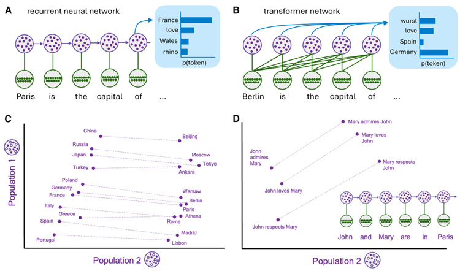
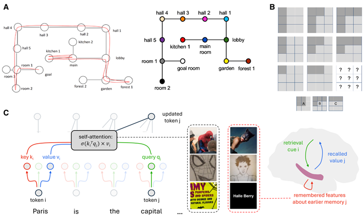
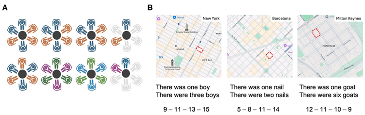
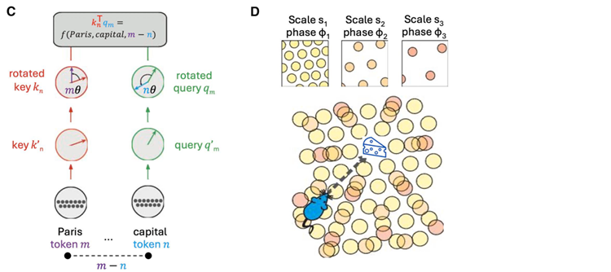
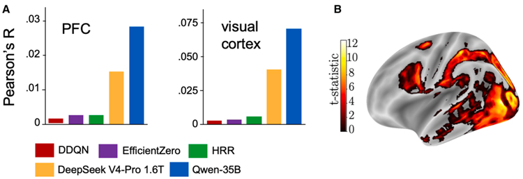

Ten years ago, two landmark papers discussed open problems in AI research from the standpoint of neuroscience and cognitive science. Today, many of these problems have been solved, mostly without direct inspiration from the study of the human brain. In this paper, we consider what is still shared between the twin
endeavors of understanding natural brains and building artificial ones. We argue that, as well as understanding the ‘‘ingredients’’ of intelligence (its component parts), both fields are now coming to grasp the ‘‘recipe’’
for intelligence (how they fit together). Surprisingly, this recipe has many parallels in biological and artificial
systems. Despite rapid progress in AI research, there are many computational problems that remain unsolved. We discuss how these problems may be addressed in natural intelligence.
10年前、AI研究における未解決の課題について、神経科学および認知科学の観点から論じた2本の重要な論文が発表されました。今日、それらの課題の多くは解決されていますが、そのほとんどは、人間の脳に関する研究から直接的な着想を得たものではありません。本稿では、「自然の脳を理解すること」と「人工の脳を構築すること」という二つの取り組みの間に、現在もなお共通して存在しているものは何かを考察します。私たちは、知能の「構成要素（材料）」を理解することに加え、両分野が今や知能の「レシピ（それらがどのように組み合わさるか）」をも捉えつつあると論じます。驚くべきことに、このレシピには、生物学的システムと人工的システムの間で多くの共通点が見られます。AI研究は急速に進展していますが、依然として未解決の計算上の課題は数多く残されています。本稿では、こうした課題が自然知能においてどのように解決されている可能性があるのかについて論じます。
A decade ago, two landmark papers were published at the
crossroads of neuroscience and AI research.1,2 It was a heady
time for both researchers interested in building AI and those
seeking to understand biological brains. By 2016, deep neural
networks had shown striking success in benchmark domains
such as natural image recognition,3 machine translation,4
video,5,6 card,7 and board games,8 and even TV gameshow
quizzes.9 This hinted at a route to machine intelligence that combined large-scale neural networks with large-volume naturalistic
training data. In tandem, evidence was starting to emerge that
deep networks capable of striking behaviors might also serve
as plausible models of biological brains, or at least of the primate
neocortex.10,11 Discussion of generally intelligent machines had
begun to seep out of fringe techno-optimist communities and
into the academic mainstream.12 However, the idea that a machine could ever match the power of biological brains still
seemed quite quixotic. The two landmark papers cautioned
that there was a long way to go. ‘‘Building human-level general
AI […] is a daunting task, because the search space of possible
solutions is vast and likely only very sparsely populated,’’ wrote a
team from Google DeepMind in a paper published in this journal.2 In a similarly cautious vein, authors from MIT wrote, ‘‘We
should [..] be mindful of what AI has achieved and what it has
not. Although the pace of progress has been impressive, natural
intelligence is still by far the best example of intelligence.’’
1
10年前、神経科学とAI研究が交差する領域において、2つの画期的な論文が発表された。1,2 当時は、AIの構築に関心を持つ研究者にとっても、生物の脳を理解しようとする研究者にとっても、非常に刺激的な時代であった。2016年までに、ディープニューラルネットワークは、自然画像の認識、3 機械翻訳、4 動画、5,6 カードゲーム、7 ボードゲーム、8 さらにはテレビのクイズ番組といったベンチマーク領域において、目覚ましい成功を収めていた。9 これは、大規模なニューラルネットワークと膨大な量の自然な学習データを組み合わせることで、機械知能を実現できる可能性を示唆していた。それと並行して、驚くべき挙動を示すディープニューラルネットワークが、生物の脳、少なくとも霊長類の新皮質を説明する妥当なモデルとなり得ることを示す証拠も現れ始めていた。10,11 汎用的な知能を持つ機械に関する議論は、一部の熱狂的なテクノロジー楽観主義者のコミュニティから広がり、学術界の主流へと浸透し始めていた。12 しかし、機械が生物の脳の能力に匹敵し得るという考えは、依然として極めて非現実的（空想的）なものに思われた。これら2つの画期的な論文は、目標達成までにはまだ長い道のりがあることを警告していた。Google DeepMindのチームは本誌に掲載された論文の中で、「人間レベルの汎用AIを構築することは……非常に困難な課題である。なぜなら、考えられる解決策の探索空間は膨大であり、その中で実際に有効な解が存在する領域は極めて限定的（まばら）である可能性が高いからだ」と述べている。2 また、MITの研究者らも同様に慎重な姿勢を示し、次のように記している。「我々は、AIが何を達成し、何を達成できていないのかを常に意識しておくべきである。進歩のペースは目覚ましいものがあるが、自然知能こそが、依然として知能の最も優れた例であることに変わりはない」。1
Both papers advised that neuroscience and cognitive science
offered a useful roadmap for building AI. Despite differences of
emphasis, the two papers cited an overlapping list of unsolved
challenges for AI research, drawing on themes that were familiar
from the study of natural brains and minds. To emulate the power
of human intelligence, they argued, future AI systems would
need to form neural representations that supported strong forms
of generalization and transfer—including the ability to compose
new ideas from existing building blocks—instead of coming a
cropper whenever faced with minor departures from their
training distribution. They would need to evolve beyond ‘‘pattern
recognition’’ systems and learn causal models of physical and
psychological processes in the natural world—for example,
how objects move and how people form beliefs. They would
need to employ modular memory and attention systems over
multiple timescales and support reasoning, planning, and imagination. The paper from the DeepMind team was, understandably, more bullish about deep learning, whereas the MIT team
remained largely wedded to a nativist tradition, arguing that
deep networks were overly data hungry and needed stronger
inductive biases. Nevertheless, the two groups agreed that
increased sample efficiency, and the consequential ability to
learn and act on the fly, was a non-negotiable ingredient of intelligence that was yet to be realized in machines.
両論文は、神経科学と認知科学がAI構築のための有益な指針（ロードマップ）を提供すると指摘している。重点の置き方は異なるものの、両論文はAI研究における未解決の課題として共通する項目を挙げており、それらは自然界の脳や心の研究において馴染み深いテーマに基づいている。人間のような知能の能力を模倣するためには、将来のAIシステムは、単に学習データからわずかに外れた状況に直面しただけで機能不全に陥るのではなく、強力な汎化や転移（既存の構成要素から新しい概念を組み立てる能力など）を可能にするような神経表現を形成する必要がある、と両論文は論じている。また、単なる「パターン認識」システムを超えて、自然界における物理的・心理的プロセス（例えば、物体がどのように動くか、人がどのように信念を形成するかといったこと）の因果モデルを学習する必要がある。さらに、複数の時間スケールにわたるモジュール式の記憶システムや注意機構を備え、推論、計画、想像力をサポートすることも求められる。DeepMindチームの論文は、当然のことながらディープラーニングに対してより強気な姿勢を示しているのに対し、MITチームの論文は「生得説（ネイティビズム）」の伝統を色濃く残しており、ディープネットワークはデータを過度に必要とするため、より強力な帰納バイアスが必要であると主張している。とはいえ、両グループの共通認識として、サンプル効率の向上、そしてそれに伴う「その場で学習し行動する能力」は、知能に不可欠な要素でありながら、機械においては未だ実現されていないという点で一致している。
In this review article, we discuss what the last decade of AI
research means for psychology and neuroscience. From the
standpoint of 2026, the brain- and cognition-inspired roadmap
proposed in these two papers might seem a little quaint. Today’s
multi-trillion-parameter foundation models have ridden roughshod over many of the unsolved challenges highlighted in these
earlier papers. Frontier AI models can systematically compose
new ideas and make wholly novel inferences, pick up new skills
or knowledge on the fly, retrieve vast swathes of knowledge,
flexibly solve problems, and intuitively grasp the intricacies of
the physical and psychological world. The backbone for these
achievements is mastery of a cognitive feat that both papers
were strangely shy of discussing—the ability to generate coherently structured outputs in natural language and other formal
symbolic systems, such as mathematical notation and computer
code.12 This has turned today’s AI models into remarkable tools
for information retrieval, content generation, writing and coding
assistance, problem solving, workflow orchestration, and robotic control. It has also given impetus to a popular moral that
ever-growing model scale, not brain-inspired engineering, is
the key ingredient that underpins the success of AI systems.
This was the message of a widely cited blog post arguing that
the ‘‘bitter lesson’’ of AI research was that the field marched onward in tandem with Moore’s law, as computers became faster
and data more abundant, and not through the discovery of clever
inductive biases.13 Did the papers by the DeepMind and MIT
groups thus fail the test of time?
本レビュー論文では、過去10年間のAI研究が心理学および神経科学にとってどのような意味を持つのかを考察する。2026年という時点から振り返ると、これら2本の論文で提案された「脳や認知にヒントを得たロードマップ」は、少々古めかしく感じられるかもしれない。今日、数兆個ものパラメータを持つ基盤モデル（ファウンデーション・モデル）は、それらの初期の論文で指摘されていた未解決の課題の多くを、圧倒的な力で乗り越えてしまった。最先端のAIモデルは、新しいアイデアを体系的に構築し、全く斬新な推論を行い、新たなスキルや知識を即座に習得し、膨大な知識を引き出し、柔軟に問題を解決し、さらには物理世界や心理的世界の複雑さを直感的に把握することができる。こうした成果の根底にあるのは、両論文がなぜか深く論じることを避けていたある認知的能力の習得である。それは、自然言語や、数学的記法、コンピュータコードといった形式的な記号体系を用いて、一貫した構造を持つ出力を生成する能力である。12 これにより、今日のAIモデルは、情報検索、コンテンツ生成、執筆やコーディングの支援、問題解決、ワークフローの調整、ロボット制御といった分野において、極めて優れたツールとなった。また、このことは、「脳にヒントを得た工学」ではなく「モデル規模の絶え間ない拡大」こそが、AIシステムの成功を支える鍵であるという考え方を広く浸透させることにもつながった。これは、広く引用されているあるブログ記事の主張でもあった。その記事によれば、AI研究における「苦い教訓（bitter lesson）」とは、AI分野の進歩が、巧妙な帰納的バイアス（inductive biases）の発見によるものではなく、コンピュータの高速化やデータの増大といった「ムーアの法則」と歩調を合わせて進んできた、というものだった。13 では、DeepMindやMITの研究グループによるこれらの論文は、時の試練に耐えられなかったのだろうか。
Here, we argue that they did not—at least not entirely. Both
papers were instrumental in defining the unsolved puzzle pieces
for building intelligent machines. Many of these puzzles now
have solutions, in the form of new architectural and algorithmic
innovations. Although the answers were for the most part not
directly inspired by biology, many are curiously synergetic with
classical ideas from psychology and neuroscience about how
to build a brain. In turn, this emerging picture of the building
blocks of highly capable AI systems has shed new light on the
computational processes that may power natural general intelligence.14
本稿では、そうではなかった――少なくとも、完全にそうだったわけではない――と論じる。これら2本の論文は、知的な機械を構築する上で未解決の課題を明確にする上で重要な役割を果たした。現在では、新たなアーキテクチャやアルゴリズムの革新という形で、こうした課題の多くに解決策が提示されている。その解決策の大部分は、生物学から直接着想を得たものではないものの、興味深いことに、脳をどのように構築するかという心理学や神経科学における古典的な考え方と、相乗的な関係にある。さらに、高度な能力を持つAIシステムの構成要素に関するこうした新たな知見は、自然界における汎用的な知能の原動力となっている可能性のある計算プロセスに、新たな光を当てている。14
In the sections below, we point to four major insights from AI
research over the last decade and unpack their relevance for
the understanding of natural intelligence:
以下の各節では、過去10年間のAI研究から得られた4つの重要な知見を挙げ、それらが自然知能の理解にどのような意義を持つのかを紐解いていきます。
Nevertheless, many unsolved challenges remain.15 In a final
section, we discuss major outstanding issues and propose insights from psychology and neuroscience that may be relevant.
We focus on three shortcomings of modern AI systems:
とはいえ、未解決の課題は依然として数多く残されている。15 最後のセクションでは、主要な未解決の論点を取り上げ、それらに関連しうる心理学や神経科学の知見を提示する。
ここでは、現代のAIシステムが抱える3つの欠点に焦点を当てる。
We also acknowledge the possibility that the current paradigm
may not be the final waystation en route to artificial general intelligence. Nevertheless, whereas both original papers emphasized
the ‘‘ingredients’’ needed to build intelligence, we argue that
both fields are starting to grasp the ‘‘recipe’’ for intelligence—
how component algorithms, architectures, and cost functions
fit together to support intelligence in natural and artificial
systems.
また、現在のパラダイムが、汎用人工知能（AGI）に至るまでの最終的な経由地ではない可能性もある。とはいえ、初期の論文がいずれも知能の構築に必要な「材料」を強調していたのに対し、我々は、両分野が今や知能の「レシピ」――すなわち、個々のアルゴリズム、アーキテクチャ、コスト関数がどのように組み合わさることで、自然界や人工システムにおける知能を支えているのか――を捉え始めていると論じる。
So much has changed since 2016; it is impossible to capture it all
in a single article. In what follows, we try to give an overview of
the most important advances and their relevance for cognitive
science and neuroscience.
2016年以降、非常に多くの変化がありました。そのすべてを一つの記事に収めることは不可能です。本稿では、最も重要な進展の概要と、それらが認知科学および神経科学において持つ意義について解説を試みます。
If we look back to 2016, the most promising paradigm in AI was
deep reinforcement learning (RL), which had formed the bedrock
of early successes in Atari and Go.16 The RL paradigm assumes
that some environmental states (such as the taste of an apple)
emit special signals called rewards, and agents acquire intelligence by learning to maximize their expected reward.17 There
are obvious reasons to consider RL a theory of the brain. It draws
heavily on psychological theories of motivated behavior17 and
has been successful at explaining neural activity, especially in
subcortical circuits.18,19 Despite these synergies, using RL as a
framework for understanding biological intelligence obliges us
to overlook the problem that, in the natural world, its basic
assumption does not hold. Rewards are not emitted by the environment (or even by the body) but are instead computed within
the agent’s brain (e.g., the taste of an apple is a sensory signal
like any other, and it is your brain that decides it is delicious).20
Nevertheless, in their paper, the DeepMind team leaned heavily
on RL as a linking function between biological and artificial intelligence.2
2016年当時、AIの分野で最も有望視されていたパラダイムは「深層強化学習（RL）」であった。これは、Atari（ゲーム）や囲碁における初期の成功の礎となったものである。強化学習のパラダイムでは、環境の状態（例えばリンゴの味など）が「報酬」と呼ばれる特別な信号を発すると仮定し、エージェントは期待される報酬を最大化するように学習することで知能を獲得すると考える。強化学習を脳の理論と見なすべき理由は明白である。それは、動機づけられた行動に関する心理学理論を大きく取り入れており、神経活動、特に皮質下回路における活動を説明する上で成功を収めてきたからである。しかし、こうした親和性があるにもかかわらず、生物学的知能を理解するための枠組みとして強化学習を用いると、ある重要な問題を見過ごさざるを得なくなる。それは、自然界においては、強化学習の基本的な前提が成立しないという問題である。報酬は環境（あるいは身体）から発せられるものではなく、エージェントの脳内で計算されるものだからだ（例えば、リンゴの味は他の感覚信号と同様の感覚信号に過ぎず、それが「美味しい」と判断するのは、他ならぬ自分自身の脳である）。それにもかかわらず、DeepMindチームは論文の中で、生物学的知能と人工知能を結びつける役割を果たすものとして、強化学習を全面的に依拠していた。
The MIT team were influenced by the popular view that complex human behaviors are implemented by mental programs
that involved discrete operations.21 This was a familiar posture
in cognitive science, which had long argued that intelligence
involved a symbolic language of thought.22 Proponents of this
position, however, had always struggled to explain how symbolic processing was acquired in the first place. The canonical
(nativist) response—that it is inherited—displaces rather than
solves this conundrum, as evolution itself relies on a different
(but less efficient) form of learning. This had spawned a long
and involved debate between symbolists and connectionists23
that has still not entirely faded.24 In their paper, the MIT team
took a compromise position, advocating for hybrid ‘‘neurosymbolic’’ models, which blend discrete and connectionist approaches.1
MITの研究チームは、複雑な人間の行動は、個別の操作を伴う「メンタル・プログラム（心的プログラム）」によって実行されるという一般的な見解に影響を受けていた。21 これは認知科学において馴染み深い考え方であり、認知科学では長らく、知能とは「思考の記号言語」を伴うものだと論じられてきた。22 しかし、この立場を支持する人々は、そもそも記号処理というものがどのように獲得されるのかを説明するのに、常に苦心してきた。これに対する典型的な（生得説的な）回答――すなわち「遺伝する」というもの――は、この難問を解決するのではなく、単に別の場所へ先送りしているに過ぎない。なぜなら、進化そのものが、別の（しかし効率の劣る）学習形態に依存しているからである。この問題は、記号主義者とコネクショニスト（結合主義者）との間で長きにわたる複雑な論争を引き起こし、23 その論争は現在も完全には消え去っていない。24 MITの研究チームは論文の中で、個別の操作に基づくアプローチとコネクショニスト的なアプローチを融合させた、ハイブリッドな「ニューロシンボリック（神経記号的）」モデルを提唱し、妥協的な立場をとった。1
However, the AI breakthrough, when it came, was not inspired
by either RL or symbolic cognition. In 2017, hot on the heels of
the two review articles, a new architecture for sequence
modeling was proposed, called the transformer.25 Sequence
modeling is a core aspect of the natural language processing
(NLP) challenge of generating a plausible next word \(x_{n+1}\) in a
sentence \(X = \{x_1, x_2, x_3…x_n\}\). The transformer took a radical
new approach to this problem, whereby chunks of data are ingested in a parallel, feedforward fashion, and the association
strength between each input token (e.g., a word) and every other
token is instantaneously computed in a giant computational
graph (Figures 1A and 1B). Being highly scalable,26 the transformer soon became the core building block of a new class of
generative model called a large language model (LLM).27,28 An
early milestone was GPT-3, which captured the world’s attention
in 2020 for its ability to answer general knowledge questions and
write long and (mostly) coherent passages of text.29 Today, trillion-parameter transformer networks excel at tasks involving
natural language, coding, math, and reasoning, as well as supporting multimodal content generation, digital tool use, and robotics.
しかし、AIにおける画期的な進歩は、強化学習（RL）や記号的認知のいずれからも着想を得たものではなかった。2017年、2本のレビュー論文が発表された直後に、「トランスフォーマー（Transformer）」と呼ばれる、系列モデリングのための新しいアーキテクチャが提案された。系列モデリングとは、自然言語処理（NLP）における中核的な課題であり、文 \(X = \{x_1, x_2, x_3, \dots, x_n\}\) において、次に続く妥当な単語 \(x_{n+1}\) を生成することを指す。トランスフォーマーはこの課題に対して、従来とは根本的に異なるアプローチをとった。すなわち、データの塊を並列的かつフィードフォワードな形で取り込み、巨大な計算グラフの中で、各入力トークン（単語など）と他のすべてのトークンとの間の関連性の強さを瞬時に計算する仕組みである（図1Aおよび1B）。高い拡張性を備えたトランスフォーマーは、やがて「大規模言語モデル（LLM）」と呼ばれる新しいクラスの生成モデルの主要な構成要素となった。初期の重要なマイルストーンとなったのがGPT-3である。同モデルは、一般的な知識に関する問いに答えたり、長く、かつ（概ね）一貫した文章を作成したりできる能力によって、2020年に世界中の注目を集めた。今日では、1兆個ものパラメータを持つトランスフォーマー・ネットワークが、自然言語、プログラミング、数学、推論を伴うタスクにおいて優れた性能を発揮しているほか、マルチモーダルなコンテンツ生成、デジタルツールの利用、さらにはロボティクスといった分野も支えている。

Figure 1. Language representations in AI models
(A) Schematic of the architecture of a recurrent neural network trained on NLP data. Green circles represent input units. Purple circles represent hidden units.
Lines show how information is passed (all input units project to hidden units but not vice versa). Blue inset: schematic of the model output (probabilities over token
completions). Information is passed along a temporal chain.
(B) Equivalent for the transformer network, which acts like a computational graph, with predictions simultaneously informed by all information in the context.
(C) Low-dimensional projection of RNN (inset in D) activity on an NLP task, elicited by countries and capitals. Each dot represents the activation elicited by a word.
The lines link countries to their respective capitals. Units are arbitrary. Three features of the organization are salient: (a) the network distinguishes capitals from
countries along a single dimension (population 2), (b) the network aligns countries and their corresponding capitals (e.g., France → Paris) on an orthogonal
dimension (population 1), and (c) population 1 encodes information about the longitude (east-west orientation) of each country/capital pair. Figure adapted from
Mikolov et al.30
(D) Equivalent low-dimensional projection for subject-verb-object (SVO) sentences. One dimension encodes the syntactic structure (whether John or Mary is the
subject/object of the sentence). The other encodes the nature of the relationship between John and Mary.
図1. AIモデルにおける言語表現
(A) 自然言語処理（NLP）データで学習されたリカレントニューラルネットワーク（RNN）のアーキテクチャの模式図。緑色の円は入力ユニットを、紫色の円は隠れユニットを表す。
線は情報の伝達経路を示す（すべての入力ユニットから隠れユニットへ情報が伝わるが、その逆はない）。青い枠内はモデルの出力（トークン補完の確率分布）の模式図である。情報は時間的な連鎖に沿って伝達される。
(B) トランスフォーマー（Transformer）ネットワークの場合。これは計算グラフのように機能し、コンテキスト内のすべての情報に基づいて予測が同時に行われる。
(C) NLPタスクにおけるRNN（Dの枠内に示す）の活動を低次元に投影したもの。国名と首都名を入力した際に生じる活動を示しており、各点は単語によって引き起こされた活性化を表す。
線は、国とそれに対応する首都を結んでいる。軸の単位は任意である。この構造には3つの顕著な特徴がある。(a) ネットワークは、ある次元（次元2）に沿って首都と国を区別している。(b) ネットワークは、それと直交する別の次元（次元1）上で、国とそれに対応する首都（例：フランス → パリ）を並べている。(c) 次元1は、各「国・首都」ペアの経度（東西方向の位置）に関する情報をエンコードしている。図はMikolovら30の論文より改変。
(D) 「主語-動詞-目的語（SVO）」文における同様の低次元投影。一方の次元は統語構造（文中でジョンとメアリーのどちらが主語か、あるいは目的語か）をエンコードし、もう一方の次元はジョンとメアリーの間の関係の性質をエンコードしている。
LLMs are generative models, which means that they learn by
predicting new samples from their input distribution. The idea
that this might describe how the brain works was a rather niche
position in 2016. The ‘‘active inference’’ framework proposed
that the brain had evolved to infer the latent causes of sensation
(recognition) and make predictions (generation)31 and that
‘‘reward’’ was really an epiphenomenon.32 There were suggestions that sensory systems might compute latent variables via
the same principles as deep generative models.33,34 The MIT
group had advocated for probabilistic inference as the fundamental computational engine for intelligence and provided
proof-of-concept demonstrations of the power of probabilistic
programs for learning causal models of the world and solving
challenges such as recognizing objects and handwritten digits.21
However, at the time, the idea that making and revising predictions about data might offer a universal solution for everything
from generating valid sentences to winning at poker was not universally accepted.
LLM（大規模言語モデル）は生成モデルであり、入力データの分布から新しいサンプルを予測することによって学習を行う。2016年当時、こうした仕組みが脳の働きを説明しうるという考え方は、まだかなりマイナーな見解であった。「能動的推論（active inference）」という枠組みでは、脳は感覚の背後にある潜在的な原因を推論し（認識）、予測を生成する（生成）ように進化したとされ、「報酬」とは実際には付随的な現象（随伴現象）に過ぎないと提唱された。また、感覚システムが深層生成モデルと同様の原理に基づいて潜在変数を計算しているのではないか、という指摘もなされていた。MITの研究グループは、知能の根幹をなす計算エンジンとして「確率的推論」を提唱し、確率的プログラムを用いることで、世界の因果モデルを学習したり、物体認識や手書き数字の識別といった課題を解決したりできることを、概念実証によって示した。しかし当時、データに関する予測を立て、それを修正していくというアプローチが、妥当な文章の生成からポーカーでの勝利に至るまで、あらゆるものに対する普遍的な解決策となり得るという考え方は、広く受け入れられていたわけではなかった。
The arrival of LLMs taught us just how powerful generative
models could be when scaled to billions of parameters. This
has revived their cachet among neuroscientists. One example
comes from a subfield of neuroscience that seeks to explain neural signals in the sensory neocortex as linear mappings from the
activity patterns of task-optimized deep networks.35 In its first
flowering a decade ago, it looked to supervised learning in convolutional neural networks to explain visual cognition.10 However, recent approaches have relied on generative models,
including variational autoencoders, contrastive models, and
LLMs themselves as a tool of choice.36–39 Transformer-based
models have also been proposed as psycholinguistic theories40
and even used as foundation models for cognition.41 After
decades of being derided as implausible and esoteric, predictive
models are back in fashion.42,43
大規模言語モデル（LLM）の登場は、生成モデルが数十億ものパラメータ規模にまで拡張された際、いかに強力なものとなり得るかを我々に示した。これにより、神経科学者の間での生成モデルの評価が再び高まっている。その一例として、感覚新皮質における神経信号を、課題遂行に向けて最適化された深層ニューラルネットワークの活動パターンからの線形写像として説明しようとする、神経科学の一分野が挙げられる。10年前の最初の隆盛期には、視覚認知を説明するために、畳み込みニューラルネットワークを用いた教師あり学習が注目されていた。しかし近年では、変分オートエンコーダや対照学習モデル、さらにはLLMそのものといった生成モデルが、主要な手法として採用されるようになっている。また、Transformerベースのモデルは、心理言語学的な理論として提案されたり、認知の基盤モデル（ファウンデーションモデル）として活用されたりもしている。長年にわたり「非現実的で難解なもの」として冷笑されてきた予測モデルだが、今、再び脚光を浴びているのである。
The success of LLMs has prompted neuroscientists to revisit
other traditional pieties about computation and the brain. One
thing we have learned is that, with sufficient data, weakly structured learning systems can learn highly structured behaviors.44 A
neural network is such a system, with millions of interchangeable
units and connections initialized at random, yet we now know
that it can solve problems involving highly systematic operations, such as the correct use of nouns and verbs, long division,
and logical syllogisms. Early neural networks showed hints of being able to learn symbolic tasks such as writing Python code,45
but the triumph of LLMs at math, coding, and reasoning has
effectively laid to rest the long-running debate between symbolist and connectionist camps in cognitive science.23
大規模言語モデル（LLM）の成功は、神経科学者たちに、計算と脳に関する従来の「定説」を再考させるきっかけとなった。我々が学んだことの一つは、十分なデータさえあれば、構造が緩やかな学習システムであっても、高度に構造化された振る舞いを学習できるということである。ニューラルネットワークはそのようなシステムの一例であり、ランダムに初期化された何百万もの交換可能なユニットと結合から構成されているにもかかわらず、名詞や動詞の適切な使用、長除法、論理的な三段論法といった、極めて体系的な操作を伴う問題を解決できることが明らかになった。初期のニューラルネットワークにも、Pythonコードの記述といった記号的なタスクを学習できる可能性の萌芽は見られたが、数学、コーディング、推論におけるLLMの圧倒的な成功は、認知科学における「記号主義」と「コネクショニズム」の陣営間で長年続いてきた論争に、事実上の終止符を打つこととなった。
Another surprising insight was just how much world knowledge is encoded in natural language. There were early hints
that neural networks trained to predict the next word on large
text-based corpora could represent high-level information about
how the world is organized30 (Figures 1C and 1D). However, the
dominant view, from philosophy to neuroscience, was that sensory experience and embodied action were non-negotiable requirements for an AI system to understand the natural world.46
The DeepMind team bet on training deep networks to reproduce
the verbal instructions that humans gave an agent navigating a
3D visual playroom environment.47 However, early LLMs displayed some striking knowledge of a physical world they had
never even seen. For example, transformers trained on text alone
could infer the structure of color space48 and generalize an understanding of Euclidean geometry to unseen concepts.49 After
reading a description of the layout of a house, GPT-4 was able to
write a Python program that correctly visualized the map
(Figure 2A).50 Critics were quick to point out that LLMs (and
vision language models, or VLMs, that had also been jointly
trained on images and their text descriptions) lagged behind humans on tests of real-world understanding, such as predicting
whether a tower of blocks would fall over51 or navigating through
a maze to a goal.52 Indeed, the idea that LLMs are fundamentally
flawed because they lack a ‘‘world model’’ continues to carry
currency.53 However, the view that models can learn meaning
without reference to the physical world has become a popular,
if not prevailing, view.54
もう一つの驚くべき知見は、自然言語の中にどれほど膨大な「世界に関する知識」が埋め込まれているかという点である。大規模なテキストコーパスを用いて「次の単語」を予測するように訓練されたニューラルネットワークが、世界の構成に関する高度な情報を表現しうることを示唆する兆候は、早い段階から存在していた（図1Cおよび1D）。しかし、哲学から神経科学に至るまで、当時主流だった見解は、AIシステムが自然界を理解するためには、感覚的な経験や身体を伴う行動が不可欠であるというものだった。DeepMindのチームは、3Dの視覚的な遊び場環境でエージェントを操作する際、人間が与える言語的な指示を再現できるようにディープネットワークを訓練するというアプローチをとった。ところが、初期のLLM（大規模言語モデル）は、一度も目にしたことのない物理世界について、驚くべき知識を示した。例えば、テキストのみで訓練されたTransformerモデルは、色空間の構造を推論したり、ユークリッド幾何学の理解を未知の概念へと一般化したりすることができた。GPT-4は、家の間取りに関する記述を読み取るだけで、その地図を正しく可視化するPythonプログラムを作成することができた（図2A）。一方で、LLM（および画像とそれに対応するテキスト記述で同時に訓練された視覚言語モデル、すなわちVLM）は、積み木でできた塔が倒れるかどうかを予測したり、迷路を通り抜けてゴールにたどり着いたりといった、現実世界を理解する能力を問うテストにおいて、人間には及ばないという指摘もすぐになされた。実際、「LLMには『世界モデル』が欠けているため、根本的に不完全である」という考え方は、現在でも根強く残っている。しかしその一方で、物理世界を直接参照しなくても、モデルは意味を学習しうるという見解も、主流とまではいかないまでも、広く支持されるようになっている。

Figure 2. Structure learning in transformer networks
(A) Left panel shows the layout of a map used in a text-based exploration game. After playing the game from natural language prompts, GPT-4 was asked to write
computer code that generated the map layout (right). Adapted from Bubeck et al.50
(B) Example relational reasoning problem used in psychometric testing. Participants are asked to infer which completion (A, B, or C) is most appropriate.
(C) Left: schematic depicting self-attention in the transformer, with keys and values for each token i compared with the query for every other item j. Here, the
network needs to relate ‘‘Paris’’ to ‘‘capital’’ in order to predict the forthcoming token ‘‘France.’’ Right: in the mammalian brain, memory features may be indexed
in the neocortex via the neural equivalent of keys in the hippocampus. Center: example images that elicit activation in single neurons in MTL (right block) or units in
CLIP (left block). In both cases, the unit responds to photos, drawings, and text-related concepts. Adapted from Goh et al.55
図2. Transformerネットワークにおける構造学習
(A) 左パネルは、テキストベースの探索ゲームで使用されるマップのレイアウトを示している。自然言語のプロンプトを通じてゲームをプレイした後、GPT-4に対し、そのマップのレイアウトを生成するコンピュータコードを作成するよう求めた（右）。Bubeckら50より改変。
(B) 心理測定テストで用いられる関係推論問題の例。参加者は、提示された選択肢（A、B、またはC）のうち、どれが最も適切かを推論するよう求められる。
(C) 左：Transformerにおけるセルフアテンションの模式図。各トークンiの「キー（key）」および「バリュー（value）」が、他のすべての項目jの「クエリ（query）」と比較される。ここでは、ネットワークが「Paris（パリ）」と「capital（首都）」という概念を関連付けることで、次に続くトークン「France（フランス）」を予測する必要がある。右：哺乳類の脳において、記憶の特徴は、海馬にある「キー」に相当する神経メカニズムを介して、新皮質内でインデックス化されている可能性がある。中央：内側側頭葉（MTL）内の単一ニューロン（右ブロック）や、CLIP内のユニット（左ブロック）を活性化させる画像の例。いずれの場合も、そのユニットは写真、図画、およびテキストに関連する概念に対して反応を示す。Gohら55より改変。
Despite astonishing recent progress in AI research, not
everyone has embraced the view that transformer-based generative models are a promising paradigm for intelligence. Many still
claim that AI systems cannot ‘‘really’’ be intelligent if they are
merely predicting tokens.56,57 Indeed, it is true that vanilla LLMs
have several shortcomings that limit their readiness for universal,
plug-and-play rollout. Model responses are not always reliable,58
content generation can be stereotyped and homogeneous,59 beliefs are often expressed overconfidently,60 reasoning can be
faulty,61 and models often struggle to remain true to their goals
over the long term.62 In fact, as we discuss below, many of the
inductive biases that were subsequently developed in AI
research have served to paper over these cracks in basic LLM
abilities. For example, naive transformers struggle with elaborate
arithmetic calculations,63 but when equipped with temporally
extended cognition, access to external tools, and a means to
verify solutions during training (with RL), they can go on to almost
win Math Olympiads64 and solve Erdos } Problems.65
近年のAI研究における驚異的な進歩にもかかわらず、Transformerベースの生成モデルが知能の有望なパラダイムであるという見解を、誰もが受け入れているわけではない。単にトークンを予測しているだけのAIシステムは、「真に」知的であるとは言えないと主張する声も依然として多い。実際、標準的な大規模言語モデル（LLM）には、汎用的かつ即座に利用可能な形で展開することを妨げるような欠点がいくつか存在する。モデルの応答は必ずしも信頼できるとは限らず、生成されるコンテンツはステレオタイプ的で画一的になりがちである。また、自身の見解を過度に自信を持って表明することも多く、推論に誤りが含まれることもある。さらに、長期にわたって当初の目標を一貫して維持し続けることにも苦労することがある。実際、後述するように、その後のAI研究で導入された多くの「帰納バイアス（inductive biases）」は、こうしたLLMの基本的な能力における欠陥を覆い隠す役割を果たしてきた。例えば、単純なTransformerは複雑な算術計算を苦手とするが、時間的な広がりを持つ認知機能や外部ツールへのアクセス手段、そして（強化学習などを通じて）学習中に解法を検証する仕組みを備えることで、数学オリンピックで優勝に近い成績を収めたり、エルデシュの問題を解いたりすることが可能になる。
It is widely stated that the key to intelligence is relational inference—the ability to learn and exploit abstract patterns in data.
In psychology, analogical puzzles such as Raven’s Progressive
Matrices66 are the backbone of psychometric testing
(Figure 2B). Neuroscientists have long searched for neurons
that code for abstract concepts in a way that is invariant to their
surface properties. In machine learning, the ability to transfer
knowledge to out-of-distribution tasks with similar structure is
a prized success metric.67 This perspective was central to
both review articles, which argued that future AI systems would
need to learn generalizable abstractions and solve novel relational reasoning problems in the way that humans can.
知能の鍵は「関係推論」――すなわち、データに含まれる抽象的なパターンを学習し、それを活用する能力――にあると広く言われている。
心理学において、「レーヴン漸進的マトリックス（Raven’s Progressive Matrices）」のような類推パズルは、心理測定検査の根幹をなすものである（図2B）。神経科学の分野では、対象の表面的な性質に左右されることなく、抽象的な概念を符号化するニューロンの探索が長年続けられてきた。機械学習においては、類似した構造を持つ、学習データとは異なる分布のタスク（out-of-distribution tasks）へと知識を転移できる能力が、重要な成功指標とされている。この視点は、二つのレビュー論文の核心をなすものであり、それらの論文では、将来のAIシステムには、人間と同様に、汎用可能な抽象概念を学習し、未知の関係推論問題を解決する能力が必要になると論じられている。
Despite this enjoinder, we do not know how humans and other
animals learn about the relational structure of the world. The
brain regions most commonly implicated are the prefrontal cortex (PFC) and the medial temporal lobe (MTL), including the hippocampus. Both contain neurons that code for rich abstractions.
For example, neurons in the human MTL respond to famous individuals or buildings but are invariant to modality,68,69 and cells
in the macaque hippocampus code for the spatial layout of an
environment, irrespective of the landmarks present,70 or signal
a relational ‘‘map’’ of values in a task.71 In the PFC, neurons
code for the abstract rules that govern a task72 and fire to movement sequence archetypes independent of the actions
required.73 However, the computations in mammalian MTL and
PFC are quite different and support distinct types of memory.
The MTL is widely thought to associate the rich contextual features of a memory via Hebbian learning. This makes it crucial
for laying down durable traces in an episodic store. By contrast,
in the PFC, each neural state excites the next in a recurrent temporal chain.74 This allows it to integrate information and maintain
latent states over a short delay period, making it vital for working
memory.
こうした指摘があるにもかかわらず、人間や他の動物が世界の「関係構造」をどのように学習しているのかは、依然として解明されていない。このプロセスに関与していると考えられている主要な脳領域として、前頭前皮質（PFC）と、海馬を含む内側側頭葉（MTL）が挙げられる。これらの領域には、高度に抽象化された情報を符号化するニューロンが存在する。
例えば、ヒトのMTLにあるニューロンは、特定の著名人や建物に対して反応するが、その反応はモダリティ（感覚入力の形式）に依存しない。また、マカクザルの海馬にある細胞は、環境内のランドマークの有無にかかわらず、その空間的配置を符号化したり、課題における価値の「関係マップ」を表現したりする。一方、PFCのニューロンは、課題を支配する抽象的なルールを符号化するほか、具体的な動作の内容とは独立して、一連の動きの「原型（アーキタイプ）」に対して発火する。しかし、哺乳類のMTLとPFCにおける計算様式は大きく異なっており、それぞれ異なる種類の記憶を支えている。
MTLは、ヘブ学習（Hebbian learning）を通じて、記憶に含まれる豊かな文脈的特徴を結びつけていると考えられている。この機能は、エピソード記憶として永続的な痕跡を形成する上で極めて重要である。対照的にPFCでは、ある神経状態が次の神経状態を興奮させるという、時間的な連鎖（リカレントな連鎖）が生じる。この仕組みにより、情報の統合や、短い遅延期間にわたる潜在的な状態の保持が可能となり、ワーキングメモリ（作業記憶）において不可欠な役割を果たしている。
A decade ago, state-of-the-art AI models were recurrent neural networks (RNNs) with learnable gates.75 As hypothesized for
the PFC, RNNs contain trainable parameters that map past onto
current latent states, dictating how information is maintained,
transformed, or discarded at each point in time.74,76 When combined with RL, systems based on RNNs led the field on benchmark challenges involving video games.77 RNN-based
sequence-to-sequence models were used to model language
and images for machine translation,4 language modeling,78
and image captioning.79 However, when asked to generate
long passages of text, these models produced outputs that
were superficially plausible, but the overall narrative was disappointingly incoherent.80
10年前、最先端のAIモデルは、学習可能なゲートを備えたリカレントニューラルネットワーク（RNN）であった。前頭前野（PFC）について仮定されているのと同様に、RNNには過去の状態を現在の潜在状態へと写像する学習可能なパラメータが含まれており、これによって各時点において情報がどのように保持、変換、あるいは破棄されるかが決定される。RNNを強化学習（RL）と組み合わせたシステムは、ビデオゲームを用いたベンチマーク課題において、この分野を牽引する成果を上げた。また、RNNを用いた「系列変換（sequence-to-sequence）」モデルは、機械翻訳、言語モデリング、画像キャプション生成といったタスクにおいて、言語や画像を扱うためのモデルとして利用された。しかし、こうしたモデルに長い文章を生成させると、表面上はもっともらしく見えるものの、全体として見ると一貫性に欠ける、期待外れな結果となってしまうことがあった。
Transformers dispense with recurrence and model sequences
in a wholly parallel, feedforward fashion (Figure 2C, left). Inputs \(X\)
are projected into a latent ‘‘value’’ space via a set of weights \(W_v\).
However, additional trainable weights \(W_k\) and \(W_q\) map each token \(x_i\) onto an indexable address (a ‘‘key’’ ki) and a retrieval cue
(a ‘‘query’’ qi). For each token \(x_i\), this allows values \(v_j\) to be
retrieved in proportion to how well the query qi matches the
key \(k_j\) for all other tokens \(x_j\), according to a similarity kernel
(e.g., a softmax function). Thus, this ‘‘self-attention’’ process
allows the transformer to learn to encode relations—how each
token in a sequence relates to every other and how these relationships determine future predictions. Representing tokens in
a graph, rather than in a chain, turns out to be a crucial ingredient
for modeling sentences. However, as transformers scale to hundreds of billions of parameters, and their context window (the
length of \(X\)) grows to millions of tokens, they form a computational skyscraper that takes relational inference to new heights.
Superlative scale allows LLMs to compute relations not just between words in a sentence or statements in a paragraph but also
between the high-level narratives, arguments, or dependencies
that exist across very long passages of text or code. This allows
them to abstract over details and learn to predict outputs based
on the most general and high-level structure in their input data.
トランスフォーマーは再帰を排除し、シーケンスを完全に並列かつ順方向の方式でモデル化します（図2C、左）。入力 \(X\) は、重み \(W_v\) の集合を介して潜在的な「値」空間に射影されます。
さらに、学習可能な重み \(W_k\) と \(W_q\) によって、各トークン \(x_i\) はインデックス可能なアドレス（「キー」 ki）と検索キュー（「クエリ」 qi）にマッピングされます。各トークン \(x_i\) について、クエリ qi が他のすべてのトークン \(x_j\) のキー \(k_j\) とどの程度一致するかに応じて、値 \(v_j\) が検索されます。これは、類似度カーネル（例えば、ソフトマックス関数）に基づいて行われます。このように、この「自己注意」プロセスによって、トランスフォーマーは関係性を符号化することを学習します。つまり、シーケンス内の各トークンが他のすべてのトークンとどのように関連しているか、そしてこれらの関係性が将来の予測をどのように決定するかを学習します。トークンをチェーンではなくグラフで表現することは、文をモデル化する上で重要な要素であることがわかっています。しかし、トランスフォーマーが数千億のパラメータにまで拡張され、コンテキストウィンドウ（Xの長さ）が数百万のトークンにまで拡大すると、それらは計算上の超高層ビルを形成し、関係推論を新たな高みへと引き上げます。
この卓越したスケールにより、LLMは文中の単語間や段落中のステートメント間だけでなく、非常に長いテキストやコード全体に存在する高レベルのナラティブ、議論、依存関係間の関係も計算できるようになります。これにより、詳細を抽象化し、入力データ内の最も一般的で高レベルの構造に基づいて出力を予測することを学習できます。
The magic mix of self-attention and scale has allowed LLMs to
learn the sorts of abstractions that had eluded an earlier generation of deep networks (Figure 2C). For example, using interpretability methods, GPT-2 was found to contain neurons that coded
for linguistic concepts such as ‘‘verbs in the gerund form,’’ ‘‘female names,’’ or ‘‘words related to money.’’
81 When applied to
image generation and captioning, a transformer-based model
called Contrastive Language-Image Pretraining (CLIP)82 was
found to contain units coding for multimodal semantic abstractions such as ‘‘Christmas’’ or ‘‘West Africa’’—the AI equivalent
of ‘‘concept neurons’’ in human MTL.55 Researchers subsequently learned how to target concepts encoded in LLMs with
techniques analogous to invasive brain stimulation. This allowed
them to create a version of Claude (from Anthropic) that was obsessed with the Golden Gate Bridge and would bring it up in
every conversation.83
「セルフアテンション」と「スケール」という魔法のような組み合わせにより、大規模言語モデル（LLM）は、それ以前の世代のディープニューラルネットワークでは獲得できなかったような抽象概念を学習できるようになった（図2C）。例えば、解釈可能性（インテリピタビリティ）に関する手法を用いて調査したところ、GPT-2の内部には、「動名詞形の動詞」、「女性の名前」、「お金に関連する言葉」といった言語的概念を符号化するニューロンが存在することが明らかになった。また、画像生成やキャプション生成の分野では、「CLIP（Contrastive Language-Image Pretraining）」と呼ばれるTransformerベースのモデルにおいて、「クリスマス」や「西アフリカ」といったマルチモーダルな意味的抽象概念を符号化するユニットが見つかっている。これは、人間の内側側頭葉（MTL）に存在する「概念ニューロン」のAI版とも言えるものである。その後、研究者たちは、侵襲的な脳刺激法に似た手法を用いて、LLM内部に符号化された特定の概念を操作する方法を編み出した。この技術を応用し、Anthropic社が開発したAI「Claude」を改造して、ゴールデンゲートブリッジに異常なほど執着し、どんな会話の中でも必ずその話題を持ち出すように仕立てることが可能となった。
Transformers are peculiarly effective at sequence modeling
because parallel processing allows relations between each and
every item to be computed instantaneously. However, in the natural world, time has the inconvenient property of being onedimensional and irreversible, obliging animals to process
sensory inputs one-by-one. In some ways, jettisoning the RNN
in favor of self-attention is a retrograde step for biological realism, and a significant departure from attempts to learn about
intelligent computation from the biological brain.
Transformerは、並列処理によってあらゆる要素間の関係を瞬時に計算できるため、系列モデリングにおいて極めて高い有効性を発揮する。しかし現実世界において、時間には「一次元的かつ不可逆的である」という厄介な性質があり、そのため生物は感覚入力を一つずつ順次処理せざるを得ない。ある意味で、RNN（再帰型ニューラルネットワーク）を捨てて自己注意機構（セルフアテンション）を採用することは、生物学的なリアリティの観点からは後退であり、生物の脳から知的な計算のあり方を学ぼうとする試みからは大きく逸脱するものと言える。
Nevertheless, the transformer draws on computational principles with deep roots in psychology and neuroscience.84 Instead
of recurrent memory, it uses fast associative learning to encode
the past in a way that predicts the future. In psychology, this is
called ‘‘episodic’’ memory,85 which (as in the transformer) has
typically been modeled as an associative process that relies on
the outer product of two sparse vectors encoding features of a
memory.86,87 This computational scheme allows memories to
be retrieved from noisy or partial inputs (‘‘pattern completion’’),
especially when the retrieval process itself is iterative and governed by attractor dynamics.88,89 In deep learning models, a
rapid associative encoding step has long been proposed to
help preserve memories against blurring by subsequent parameter tuning,90–92 and neuroscientists have proposed that the fast
step occurs in the hippocampus, complementing slower learning
in the neocortex.93,94 A natural implementational scheme is Hebbian learning, variants of which allow neural feature selectivity to
emerge after a single experience.95–97 Softmax normalization in
the transformer even confers sparsity, a capacity-enhancing
transform thought to precede autoencoding in the MTL.98
Thus, although the transformer cannot offer a complete model
of biological computation, it relies on many of the principles of
associative memory in the mammalian brain.
とはいえ、Transformerは、心理学や神経科学に深く根ざした計算原理に基づいている。Transformerは、再帰的な記憶を用いるのではなく、高速な連想学習を利用して過去を符号化し、それによって未来を予測する。心理学において、これは「エピソード記憶」と呼ばれる。Transformerの場合と同様に、エピソード記憶は、記憶の各特徴を符号化した2つの疎（スパース）なベクトルの外積に基づく連想プロセスとしてモデル化されるのが一般的である。この計算スキームにより、ノイズを含んだ入力や不完全な入力からでも記憶を想起することが可能になる（「パターン補完」）。これは特に、想起プロセス自体が反復的であり、アトラクターダイナミクス（誘引的力学）によって制御される場合に顕著である。ディープラーニングのモデルにおいても、その後のパラメータ調整によって記憶が曖昧になってしまうのを防ぐために、高速な連想符号化ステップを導入することが以前から提案されてきた。神経科学者らは、この高速なステップが海馬で行われ、新皮質におけるより緩やかな学習を補完しているのではないかと示唆している。これを実現する自然な手法としてヘブ学習が挙げられ、その変種を用いることで、たった一度の経験から神経細胞の特徴選択性を生じさせることが可能になる。Transformerにおけるソフトマックス正規化は、疎性（スパース性）をもたらす役割も果たしている。この疎性は、内側側頭葉（MTL）における自己符号化（オートエンコーディング）に先立って生じると考えられており、記憶容量を向上させる変換である。したがって、Transformerは生物学的計算の完全なモデルとは言えないものの、哺乳類の脳における連想記憶の原理の多くを取り入れているのである。
As the brain is bound by time’s arrow, it needs recurrent
computation to make sure that the present moment is composed
of the recent past. Indeed, numerous recording studies have
shown that the geometry and dynamics of neural population activity during memory and inference tasks can be modeled with
RNNs.11,99 Recurrence allows multiple features of the past to
linger into the present (e.g., maintaining a list in active memory).
This may serve as a ‘‘buffer,’’ allowing fast associative processes
in MTL to compute relations among items (e.g., knowledge of
who likes whom). The brain employs other mechanisms to bring
the past into the present for potential associative processing,
such as experience-dependent replay, which may itself play an
organizational role in memory.100 Recent work has also shown
that PFC neurons learn to code for current and proximal states
in tandem, encoding an entire sweep of future states at
once.101 Thus, although the transformer ‘‘cheats time’’ by processing its context in parallel, the computational principles on
which it relies may be recreated in the brain in the form of highly
scalable associative memory circuits.102
脳は「時間の矢」に縛られているため、現在という瞬間が直近の過去によって構成されていることを確実にするには、再帰的な計算が必要となる。実際、数多くの記録研究から、記憶や推論の課題遂行中における神経集団活動の幾何学的構造やダイナミクスは、再帰型ニューラルネットワーク（RNN）を用いてモデル化できることが示されている。再帰構造によって、過去の複数の特徴を現在まで保持し続けることが可能になる（例えば、アクティブ・メモリ上にリストを維持するような場合である）。これは一種の「バッファ」として機能し、内側側頭葉（MTL）における高速な連想プロセスを通じて、項目間の関係性（例えば、誰が誰を好んでいるかといった知識）を計算することを可能にする。脳には、過去を現在に持ち込み、連想処理に利用するためのメカニズムが他にも存在する。その一つが「経験依存的なリプレイ（再演）」であり、これ自体が記憶の構造化において重要な役割を担っている可能性がある。また近年の研究では、前頭前皮質（PFC）のニューロンが、現在および直近の状態を組み合わせて符号化することを学習し、さらには将来の状態の全範囲を一括して符号化していることも明らかになっている。したがって、トランスフォーマー（Transformer）はコンテキストを並列処理することで「時間を回避（ズル）」していると言えるが、その計算原理は、脳内において、極めて拡張性の高い連想記憶回路という形で再現されている可能性がある。
A common critique of deep networks circa 2016 was their limited
flexibility. Humans can grasp the rules of a new card game, make
sense of a foreign sentence, or write a script in computer code.
This often involves picking up new skills on the fly, applying existing rules to unseen data, or combining familiar procedures to
solve a novel problem. These capacities have traditionally
been thought to require the encoding, composition, and manipulation of symbols. A decade ago, this view seemed vindicated
by the failure of neural networks (that learn incrementally via
slow weight updates) to demonstrate this sort of on-the-fly
learning. It is still commonly lamented that neural networks are
terribly sample inefficient and cannot match human versatility
when it comes to learning new tasks. The success of the transformer, however, has offered us fresh ideas about how biological
systems might deal flexibly with novelty.
2016年頃、ディープネットワークに対する一般的な批判の一つに、その柔軟性の限界が挙げられていた。人間は、新しいカードゲームのルールを把握したり、外国語の文章を理解したり、あるいはコンピュータのコードでスクリプトを書いたりすることができる。こうした活動には、新しいスキルを即座に習得すること、既存のルールを未知のデータに適用すること、あるいは馴染みのある手順を組み合わせて新しい問題を解決することなどが含まれる。従来、こうした能力には、記号のエンコード（符号化）、構成、そして操作が必要であると考えられてきた。10年前には、ニューラルネットワーク（重みの緩やかな更新を通じて段階的に学習するもの）がこうした即興的な学習能力を示せなかったことから、この見解は正しいものと思われていた。現在でも、ニューラルネットワークは学習効率が極めて悪く、新しいタスクを習得する際の柔軟性において人間に及ばないという指摘がしばしばなされている。しかし、「トランスフォーマー（Transformer）」の成功は、生物学的システムがいかにして柔軟に新規性に対処しうるかという点について、新たな視点をもたらしてくれた。
The secret is that, given scale and heterogeneous training, \(W_q\)
and \(W_k\) can be adjusted so that self-attention ‘‘learns how to
learn’’ within its inputs (called ‘‘in-context learning’’ or ICL; see
Figure 3A). Like other neural networks, a transformer can memorize specifics via weight updates: for example (if planning a dinner party), that Alice likes to sit next to Charlie rather than Bob.
However, after diverse experience, transformer networks can
learn more general principles—that young people prefer to sit
together or that conservatives and liberals rarely mix. Faced
with entirely new data, the transformer can apply these principles
as if operating a mental program to deal with previously unseen
guests of different ages and political persuasions. This can occur
‘‘on the fly’’ and without any weight updates, mirroring how
humans pick up new ideas from just a few experiences. Transformers trade off in-weight and in-context learning in ways
that are reminiscent of human memorization and generalization.103,104
その秘密は、大規模かつ多様なデータを用いた学習を行うことで、\(W_q\) と \(W_k\) が調整され、自己注意機構（セルフアテンション）が入力データの中で「学習の仕方を学習する」ようになるという点にあります（これを「インコンテキスト学習（ICL）」と呼びます。図3Aを参照）。他のニューラルネットワークと同様に、トランスフォーマーも重みの更新を通じて具体的な情報を記憶することができます。例えば、ディナーパーティーを計画する際、「アリスはボブよりもチャーリーの隣に座ることを好む」といった情報を記憶するといった具合です。しかし、多様な経験を積むことで、トランスフォーマー・ネットワークはより一般的な原則――例えば「若者は同年代同士で座ることを好む」や「保守派とリベラル派はあまり混ざり合わない」といったこと――を学習できるようになります。全く新しいデータに直面した際、トランスフォーマーは、まるで頭の中のプログラムを動かすかのようにこれらの原則を適用し、これまで会ったことのない、年齢や政治的信条の異なるゲストに対処することができるのです。これは重みの更新を一切伴わず、その場（オン・ザ・フライ）で行われます。これは、人間がわずかな経験から新しい概念を習得するプロセスと重なるものです。トランスフォーマーは、重みの中での学習とインコンテキスト学習のバランスを調整しており、その仕組みは人間の記憶や一般化のあり方を彷彿とさせます。103,104


Figure 3. In-context learning and neural scaffolds
(A) Top (in-weight learning): with repeated exposure to seating plans, a network can memorize where people with different group membership like to sit, allowing
predictions about preferences in a new case involving the same groups (gray figures). Bottom (in-context learning): after exposure to diverse cases in which
people from different groups do not sit together, the model can make this inference for an entirely new problem involving previously unseen combinations of
groups.
(B) More examples of in-context learning. When streets are laid out in a grid, repeating the action {move forward one block, then turn left} four times will return you
to your starting location. Having learned this for two major cities (New York and Barcelona), the same principle can be applied zero-shot to another major
metropolis (Milton Keynes). Similar principles apply for syntactic rules (e.g., English plurals) and numerical sequences (below).
(C) In the transformer, rotary position codes support implicit computation of relative displacement in sequence, here shown for the token n (Paris) and token m
(capital). By rotating the key (red) and query (green) matrices by a fixed angle, the relative distance in position space (m − n) can be implicitly computed.
(D) Grid cells code for space with periodic sixfold symmetry, over diverse scales. The superposition of phase-aligned grid cells allows the computation of a
displacement vector, which (when combined with head direction cells) permits path integration, similarly to the city example above. Blue: a mouse. Also blue: a
cheesy goal.
図3. インコンテキスト学習とニューラル・スキャフォールド（神経的足場）
(A) 上段（重み内学習）：座席配置の例に繰り返し接することで、ネットワークは「異なるグループに属する人々がどこに座りたがるか」を記憶できる。これにより、同じグループを含む新たな状況下でも、誰がどこに座るかを予測できるようになる（灰色の人物）。下段（インコンテキスト学習）：異なるグループの人々が一緒に座らないという多様な事例を経験することで、モデルは、これまで見たことのないグループの組み合わせを含む全く新しい問題に対しても、同様の推論を行うことができるようになる。
(B) インコンテキスト学習のさらなる例。格子状に整備された街路において、「1ブロック進んで左に曲がる」という動作を4回繰り返すと、出発地点に戻る。ニューヨークやバルセロナといった主要都市でこの法則を学習していれば、別の都市（ミルトン・キーンズ）に対しても、事前の学習なし（ゼロショット）で同じ原則を適用できる。同様の原則は、言語の統語規則（例：英語の複数形）や数値列（下図）にも当てはまる。
(C) Transformerモデルにおいて、回転位置エンコーディング（rotary position codes）は、シーケンス内における相対的な変位の暗黙的な計算を可能にする。ここでは、トークンn（「パリ」）とトークンm（「首都」）を例に示している。キー行列（赤）とクエリ行列（緑）を一定の角度だけ回転させることで、位置空間における相対的な距離（m − n）を暗黙的に算出できる。
(D) グリッド細胞は、さまざまなスケールにおいて、周期的な6回対称性を持つ形で空間を符号化する。位相が揃った複数のグリッド細胞を重ね合わせることで、変位ベクトルを計算できる。これに頭部方向細胞（head direction cells）の情報が組み合わさることで、前述の都市の例と同様に、経路積分（path integration）が可能となる。青色はマウスを、同じく青色はゴール（チーズ）を表している。
ICL is not unique to transformers.105,106 It is closely related to
meta-learning in RNNs, whereby models learn generalizable patterns among diverse sequences of stimuli, actions, and outcomes and eventually converge to minima in weight space that
allow on-the-fly solution discovery within their recurrent dynamics.107,108 This has been proposed as a model of the PFC,
and deep meta-RL systems behave like monkeys and humans
on tasks involving multi-step inference, retrospective revaluation, meta-control, and learning set.109–111 However, there is
no doubt that self-attention is well suited to ICL,103 especially
when training data is formatted such that parallel information is
presented in a common template form, akin to an analogy.112
When exposed to large quantities of relational data, transformers
can learn generalizable syntactic rules in natural language, such
as the agreement between direct objects and verbs or possessive pronouns and their matching noun phrases, and these are
encoded in a segregable fashion in the attention heads of transformer models.113 This explains how transformers can master
the infinite variety of natural language without ever being taught
the rules of syntax, a feat that computational linguists had long
thought would be impossible.114
ICL（インコンテキスト学習）は、トランスフォーマー（Transformer）特有のものではない。これはRNN（再帰型ニューラルネットワーク）におけるメタ学習と密接に関連している。RNNでは、モデルが多様な刺激、行動、結果の系列から汎化可能なパターンを学習し、最終的に重み空間上の極小値へと収束する。この状態において、モデルは自身の再帰的なダイナミクスを通じて、その場で（動的に）解を見つけ出すことが可能になる。このメカニズムは前頭前野（PFC）のモデルとして提案されており、深層メタ強化学習システムは、多段階推論、遡及的な再評価、メタ制御、学習セット（学習の枠組みの習得）といった課題において、サルや人間と同様の挙動を示す。とはいえ、自己注意機構（セルフアテンション）がICLに極めて適していることは疑いようがない。特に、類推（アナロジー）のように、並列的な情報が共通のテンプレート形式で提示されるような形で学習データが構成されている場合、その適性は顕著である。膨大な関係性データに触れることで、トランスフォーマーは自然言語における汎化可能な統語規則（文法規則）を学習できる。例えば、直接目的語と動詞の一致や、所有代名詞とそれに対応する名詞句の関係などがこれに該当し、これらはトランスフォーマーモデルのアテンションヘッド内に、それぞれ分離可能な形でエンコードされている。この仕組みによって、トランスフォーマーは統語規則を明示的に教えられることなく、無限に多様な自然言語を習得できるのである。これは、かつて計算言語学者が不可能だと考えていた偉業である。
Over the last decade, neuroscientists have also devoted
increased attention to understanding how animals learn generalizable rules. The central challenge is the same in vivo as in silico.
If we simply memorize how Alice, Bob, and Charlie are related,
we will not be able to generalize relational knowledge to new situations. Instead, we need to grasp that, for any set of items \(x, y,\)
and \(z\), the relations \(\{x →y\}\) and \(\{y →z\}\) constrain the possibilities
for \(\{x →z\}\). Building on earlier thinking in cognitive science,115,116
a major idea that has emerged over the past decade is that neurons may explicitly encode positions in the embedding space in
which stimuli and tasks reside.117–119 Inputs are related by virtue
of how they are ‘‘embedded’’ in a manifold whose axes encode
dimensions of potential similarity, such as that given by the physical geometry of the world (here vs. there), time (now vs. later),
observable features (big and red; small and blue), or a latent
property (nephew or aunt). Neurons that signal how the similarity
space itself is organized allow us to compute how examples
\(\{x →y\}\) and \(\{y →z\}\) constrain responses to the ‘‘zero-shot’’ query
\(\{x →z\}\). For example, the geometry of physical space in the natural world is Euclidean and low dimensional, so you know that if
Xavier is next to Yolanda and Yolanda to Zac, then Xavier and
Zac cannot be too far apart. Importantly, you can make this inference instantly without any prior learning about the people concerned—you have ‘‘learned how to learn’’ about how \(x\) and \(z\)
are related from other contextual information.
過去10年間、神経科学者たちは、動物がいかにして一般化可能なルールを学習するのかという問題に、より一層の関心を寄せてきた。この中心的な課題は、生体（in vivo）においても、コンピュータ上のシミュレーション（in silico）においても共通している。
例えば、アリス、ボブ、チャーリーの間の関係を単に個別に記憶するだけでは、その関係に関する知識を新しい状況へと一般化することはできない。そうではなく、任意の要素の集合（x、y、z）において、関係「x → y」および「y → z」が、「x → z」という関係の可能性を制約しているという構造を把握する必要がある。認知科学における従来の知見を基盤としつつ、ここ10年で浮上してきた重要な考え方がある。それは、ニューロンが、刺激や課題が存在する「埋め込み空間」内での位置を明示的に符号化しているのではないか、というものである。入力同士の関係は、それらが多様体（マニフォールド）の中にどのように「埋め込まれているか」によって決まる。この多様体の軸は、潜在的な類似性の次元を符号化している。その次元には、物理的な空間（「ここ」対「あそこ」）、時間（「今」対「後で」）、観察可能な特徴（「大きくて赤い」対「小さくて青い」）、あるいは潜在的な属性（「甥」や「叔母」といった関係性）などが含まれる。類似性空間そのものの構成をシグナルとして伝えるニューロンが存在することで、我々は、「x → y」や「y → z」といった事例が、「x → z」という「ゼロショット（未経験の）」問いに対する応答をどのように制約しているのかを計算できるようになる。例えば、自然界における物理空間の幾何学的構造はユークリッド的かつ低次元である。そのため、もしザビエルがヨランダの隣にいて、ヨランダがザックの隣にいるならば、ザビエルとザックが互いに遠く離れているはずはない、と判断できる。重要なのは、この推論を、対象となる人物に関する事前の学習なしに、瞬時に行えるという点である。つまり、他の文脈情報から、「x」と「z」がどのような関係にあるのかを理解するための「学習の仕方を学習（学習のメタ学習）」しているのである。
An example cell type that codes for the embedding space itself (rather than the stimuli that populate that space) is found in
the macaque dorsal stream. There, neurons have been
observed to signal the number of items that should be remembered across a delay, irrespective of their physical form or modality (dots vs. flashes).120 More generally, the parietal cortex is a good candidate for encoding the structure of one-dimensional or ‘‘magnitude-like’’ embedding spaces119,121–123 in a
way that underpins our knowledge of transitive relations (if
\(x > y\) and \(y > z\) then \(x > z\)),124 accounts for our tendency to overgeneralize one-dimensional axes (e.g., to assume that ‘‘bigger’’
is ‘‘better’’),125,126 and supports simple arithmetic calculation,
which is impaired after parietal damage.127
埋め込み空間そのもの（その空間を満たす刺激ではなく）を符号化する細胞型の例が、マカクザルの背側経路に見られる。この領域では、刺激の物理的形態やモダリティ（点か、あるいは光の点滅かといった違い）にかかわらず、遅延期間中に記憶しておくべき項目の数を神経細胞が信号として伝達していることが観察されている。より広範には、頭頂皮質が、一次元的あるいは「大きさ（マグニチュード）」のような埋め込み空間の構造を符号化している有力な候補であると考えられる。この構造は、推移的関係（\(x > y\) かつ \(y > z\) ならば \(x > z\) であるという関係）に関する我々の知識の基盤となり、一次元的な軸を過剰に一般化してしまう傾向（例えば、「より大きい」ことは「より良い」ことだと見なすなど）を説明し、さらには単純な算術計算を支える役割を担っている。なお、頭頂葉が損傷すると、こうした算術計算能力は損なわれる。
Another celebrated example is the grid cell,128 found in the
medial entorhinal cortex (mERC), which encodes periodically
recurring positions on a 2D manifold (with the quirk that it is circularly wrapped into a toroidal form129). This resembles how the
coordinate grid lines on a map signal how Cartesian space is arranged, except in the mERC the symmetry is sixfold (hexagonal)
rather than fourfold (quadrilateral). Unlike its Nobel Prize cowinner, the hippocampal place cell, grid cells do not remap in
novel environments130 and thus give the animal a consistent
sense of how allocentric space is organized, irrespective of
which landmarks it contains. This is the sort of representation
that would allow a rodent to infer that by running cheekily all
the way around the edge of the dinner table, it would eventually
get back to the place where it started (known as ‘‘path integration’’). Similar periodic, hexagonal patterns of activity have
even been (indirectly) observed in the medial PFC when people
navigate more abstract 2D spaces, defined by continuously
varying sensory features or latent values.131–135 Thus, the brain
seems to explicitly encode not just the contents of experience
but also the structure of the embedding space in which experience occurs, allowing it to make accurate predictions about
new experiences that conform to this structure.
もう一つの著名な例として、内側嗅内皮質（mERC）に見られる「グリッド細胞」が挙げられる。これは、2次元多様体上の周期的に繰り返される位置を符号化するものである（ただし、この多様体は円環状に折り畳まれ、トーラス構造を成しているという特徴がある）。これは、地図上の座標グリッド線がデカルト空間の構成を示すのと似ているが、mERCにおける対称性は（四角形的な）4回対称ではなく、6回対称（六角形）であるという点が異なる。ノーベル賞を共同受賞した海馬の「場所細胞」とは異なり、グリッド細胞は新しい環境においても再マッピング（表現の書き換え）を起こさない。そのため、環境内にどのようなランドマークが存在するかに関わらず、動物に対して、客観的な空間（アロセントリック空間）がどのように構成されているかという一貫した感覚を与えることができる。こうした表現様式があれば、例えばネズミが、食卓の縁をぐるりと一周走り回ることで、最終的に出発地点に戻れるはずだと推論することが可能になる（これは「経路統合」と呼ばれる）。同様の周期的な六角形の活動パターンは、人間が、連続的に変化する感覚的特徴や潜在的な値によって定義される、より抽象的な2次元空間を探索する際にも、（間接的に）観察されている。つまり脳は、経験の内容だけでなく、その経験が生じる「埋め込み空間」の構造をも明示的に符号化していると考えられる。それによって脳は、その構造に従う新しい経験に対して、正確な予測を立てることができるのである。
Transformers are naively invariant to permutation (a fixed
shuffle applied to the inputs would not perturb processing, as
long as the attentional structure is maintained). Thus, to learn
temporal relations in a sequence (e.g., that words that occur
close together in a paragraph are usually more related), tokens
are tagged with additional inputs called positional embeddings.
Initially, these were auxiliary sinusoidal signals added to token
embeddings that varied smoothly across the context window,
but in modern LLMs, position is usually encoded via gradual rotations of key and query matrices (Figures 3B and 3C).136 At first,
position codes might sound like a mere engineering trick. However, the gradual rotation means that self-attention will implicitly
encode the relative distance between two tokens, so position
codes share with grid cells both the logic of representing position
in terms of phases and enabling vector computation137 and the
periodic (oscillatory) nature of the positional code. More generally, the multiplexing of ‘‘what’’ (tokens) and ‘‘where’’ (position)
helps transformers explicitly code for space or time in much
the same way that grid or number cells explicitly encode the
structure of the embedding space in which stimuli interrelate—
a key part of the recipe for intelligence in both biological and artificial agents.
Transformerは、本質的に順序の入れ替え（置換）に対して不変である（アテンション構造が維持される限り、入力に対して固定的な並べ替えを行っても処理には影響しない）。そのため、シーケンス内の時間的関係（例えば、文章中で近くに出現する単語同士は、通常、より強い関連性を持つといったこと）を学習させるために、「位置埋め込み（positional embedding）」と呼ばれる付加的な情報が各トークンに付与される。当初、これはトークン埋め込みに加算される補助的な正弦波信号であり、コンテキストウィンドウ全体にわたって滑らかに変化するものだった。しかし、現代のLLM（大規模言語モデル）では、位置情報は通常、キー行列およびクエリ行列の段階的な回転を通じてエンコードされる（図3Bおよび3C）。一見すると、こうした位置コードは単なるエンジニアリング上の工夫に過ぎないように思えるかもしれない。しかし、この段階的な回転は、セルフアテンションが2つのトークン間の相対的な距離を暗黙的にエンコードすることを意味している。つまり、これらの位置コードは、脳内の「グリッド細胞」と同様に、位置を位相として表現し、ベクトル演算を可能にするという論理を備えているだけでなく、周期性（振動性）という性質も共有しているのである。より広く言えば、「何（トークン）」と「どこ（位置）」を多重化して扱う手法は、Transformerが空間や時間を明示的にエンコードする助けとなっている。これは、グリッド細胞やナンバー細胞が、刺激同士が相互に関連し合う埋め込み空間の構造を明示的にエンコードする仕組みと非常によく似ている。こうした仕組みは、生物学的エージェントであれ人工エージェントであれ、知能を実現するための重要な要素の一つである。
A recent computational model of the mammalian MTL makes
this explicit.138 Called the Tolman-Eichenbaum machine (or
TEM), it models navigation (through either physical or abstract
spaces) by multiplexing neural signals for objects and estimated
self-location using a fast associative process. It can thus be
queried with locations (to predict the objects present where I
am) or with objects (to elicit a self-location estimate via path integration from observed landmarks) and meta-learns effectively. In
TEM, the neural codes for ‘‘position’’ are learned, rather than
added by hand, as they are in the transformer. Critically, during
training, they converge onto the same representational patterns
found in the MTL—such as coding for space in a periodic (and
sometimes sixfold) fashion and for the incident angle to objects
or boundaries. In fact, with some subtle modifications, it is
possible to make a version of the transformer with fully learnable
position codes, threby bridging the gap between transformers
and TEM.139 Other related accounts have similarly proposed
that ERC might act as a positional ‘‘scaffold’’ for memories,140
and, together, these models have revived the older idea that
the hippocampus and neocortex store ‘‘keys’’ and ‘‘values’’ for
associative memory, respectively,141 exactly like in the transformer.
哺乳類のMTL（内側側頭葉）に関する近年の計算モデルが、この点を明確に示している。138 「トルマン・アイケンバウム・マシン（Tolman-Eichenbaum machine、略称：TEM）」と呼ばれるこのモデルは、高速な連想プロセスを用いて、対象物に関する神経信号と推定される自己位置の神経信号を多重化することで、（物理的空間あるいは抽象的空間における）ナビゲーションをモデル化する。したがって、TEMに対して位置情報を入力すれば「その場所に存在する対象物」を予測でき、対象物情報を入力すれば「観測されたランドマークからの経路積分を通じて自己位置を推定」することができる。さらに、TEMは効果的なメタ学習も行う。Transformerモデルでは位置コードが手作業で追加されるのに対し、TEMでは「位置」を表す神経コードが学習によって獲得される。重要なことに、学習の過程で、これらのコードはMTLに見られるものと同じ表現パターンへと収束する。具体的には、空間を周期的（時には6回対称的）に符号化したり、対象物や境界に対する入射角を符号化したりするパターンである。実際、わずかな修正を加えることで、位置コードを完全に学習可能なTransformerのバージョンを構築することができ、これによりTransformerとTEMの間の隔たりを埋めることが可能となる。139 関連する他の理論においても、ERC（内嗅皮質）が記憶のための位置的な「足場（scaffold）」として機能している可能性が示唆されている。140 こうしたモデル群は、「海馬が連想記憶における『キー（鍵）』を、新皮質が『値（バリュー）』をそれぞれ格納している」という古くからの考えを再評価させるものとなっている。141 これはまさに、Transformerにおける仕組みと合致するものである。
RL requires agents to learn both the value of states of the world
and how they are interconnected. The former allows ‘‘modelfree’’ choices based on cached estimates of expected return,
and adding the latter allows ‘‘model-based’’ search through a
tree of possible futures to reach a goal.18,19 In 2016, one of the
hottest questions in neuroscience was exactly what blend of
these strategies animals use.142,143 Neural theories of modelbased inference drew heavily on ideas from classical planning
in AI,144 in which the main challenge was to find sensible heuristics for pruning a search tree, such as neglecting likely dead
ends.145 This mental search process was often argued to involve
the lateral PFC, where lesions lead to deficits of planning146 and
which is activated during multi-step choice142,147 and navigation.148 In AI research, the combination of representation learning
and tree search had been successful in building AlphaGo8 and in
solving high-dimensional game environments where the mechanics were inferred but not given to the agent.149
強化学習（RL）において、エージェントは世界の各状態の価値と、それらがどのように相互に関連しているかの両方を学習する必要がある。前者は、期待収益の推定値（キャッシュされた値）に基づく「モデルフリー」な選択を可能にする。後者を加えることで、目標に到達するために、起こり得る未来の選択肢をツリー状に探索する「モデルベース」の手法が可能となる。2016年当時、神経科学における最も重要な問いの一つは、動物がこれらの方略をどのような割合で組み合わせているかという点であった。モデルベース推論に関する神経科学的理論は、人工知能（AI）における古典的な計画立案（プランニング）の考え方を大きく取り入れている。そこでの主要な課題は、探索ツリーを効率的に枝刈りするための適切なヒューリスティクス（経験則）を見つけることであり、例えば、行き止まりになる可能性が高い枝を探索対象から除外するといった手法が挙げられる。こうした心的探索プロセスには、外側前頭前皮質（lateral PFC）が関与していると議論されることが多い。この領域に損傷が生じると計画立案能力に障害が現れるほか、多段階の選択やナビゲーションを行う際に活性化することが知られている。AI研究においては、表現学習と木探索を組み合わせる手法が、「AlphaGo」の構築や、ルールが明示的に与えられておらずエージェント自身がその仕組みを推論しなければならないような高次元のゲーム環境の攻略において、大きな成功を収めている。
The new lesson from the LLM era is that many classic rewardguided planning problems can be solved with semantic retrieval
in natural language. Consider the canonical problem of choosing
a restaurant. Theories grounded in model-based RL assumed
that people mentally explored a tree of possible states until
promising destinations were reached, backing up value estimates of quality and price in order to choose a left or right turn
out of the door. However, LLMs—equipped with massive world
knowledge—simply know that venue A had a horrible reputation
and venue B was closed on Mondays and can make plausible
recommendations by sampling from their generative model.
Confusingly, they can do this without ever explicitly computing
reward. This is because people talk ceaselessly about their preferences, which then finds its way into the training data, allowing
LLMs to emulate reward-based computation by simply generating likely token sequences. This has led some researchers to
wonder whether many multi-step problems are actually solved
in advance via precomputation and meta-learning rather than
relying exclusively on search or planning heuristics.150,151
LLM（大規模言語モデル）時代がもたらした新たな教訓は、報酬に基づく計画立案（reward-guided planning）を要する古典的な問題の多くが、自然言語を用いた意味的検索（semantic retrieval）によって解決可能であるという点だ。例えば、レストランを選ぶという典型的な問題を考えてみよう。モデルベース強化学習（model-based RL）に基づく理論では、人は頭の中で可能な状態のツリーを探索し、有望な目的地にたどり着くまで品質や価格といった価値評価を遡及的に計算することで、店を出た後に右へ行くか左へ行くかを決定すると想定されてきた。しかし、膨大な世界知識を備えたLLMは、「店Aは評判が非常に悪い」「店Bは月曜が定休日である」といった情報を単に「知って」おり、自身の生成モデルからサンプリングを行うことで、もっともらしい推奨を提示できる。興味深いことに、LLMは報酬を明示的に計算することなく、これを行うことができる。なぜなら、人々は自身の好みについて絶えず語っており、その情報が学習データに取り込まれているからである。これによりLLMは、単に「ありそうなトークン列」を生成するだけで、報酬に基づく計算を模倣できるのだ。このことから一部の研究者の間では、多段階の意思決定を要する問題の多くが、探索や計画立案のヒューリスティクスに全面的に依存するのではなく、事前計算やメタ学習を通じてあらかじめ解決されているのではないか、という疑問が提起されている。150,151
When LLMs first came to prominence, a vigorous debate erupted over whether they were actually ‘‘thinking.’’
152 The models
could often solve multi-step inference problems involving calculation or deduction, including complex reasoning puzzles.50 Suspiciously, however, their performance was often better when the
problem was familiar,153 prompting claims that they were just
parroting the answers encountered during training.154,155 In
fact, direct computation in the transformer activations does
allow LLMs to solve unseen reasoning problems—but only if
they are relatively simple. For example, raw arithmetic capabilities of vanilla LLMs break down as the numbers involved
become too large.29 Although this finding was originally used
to denigrate LLMs, it is actually what we might expect if they
were behaving just like humans. When teaching our children
math, for example, we provide them with props such as pen
and paper, a calculator, and maybe even a teacher. Similarly,
for LLMs, externalization and instruction are important ingredients for superlative reasoning. In fact, unlike older LLMs, models
employing chain-of-thought reasoning are provably Turing
complete.156
LLM（大規模言語モデル）が初めて注目を集めた際、それらが実際に「思考」しているのかどうかをめぐって激しい議論が巻き起こった。こうしたモデルは、計算や演繹を伴う多段階の推論問題（複雑な論理パズルを含む）を解くことができる場合が多かった。しかし、馴染みのある問題に対しては特に高い性能を示すという疑わしい側面もあり、そのため「学習過程で目にした答えを単にオウム返ししているに過ぎない」という指摘もなされた。実際、Transformerの活性化層内で行われる直接的な計算によって、LLMは未知の推論問題も解くことができる――ただし、それが比較的単純な問題である場合に限られる。例えば、標準的なLLMが持つ純粋な算術能力は、扱う数値が大きくなりすぎると破綻してしまう。この事実は当初、LLMを貶める根拠として使われたが、もしLLMが人間と同じように振る舞っているのだとすれば、むしろ当然の結果と言える。例えば子供に算数を教える際、私たちは紙とペン、電卓、あるいは教師といった「道具」や「補助」を与える。同様に、LLMにとっても、外部化や指示（インストラクション）は、高度な推論を行うための重要な要素となる。実際、初期のLLMとは異なり、「思考の連鎖（チェーン・オブ・ソート）」を用いた推論を行うモデルは、チューリング完全であることが証明されている。
One example of externalization is to allow the LLM to use a
mental scratchpad, where interim answers can be temporarily
stored but not submitted to the user. Just as a human might
articulate reasoning steps with an inner voice or jot down their
working on paper, this allows the LLM to bootstrap toward the
final solution by outputting tokens (called ‘‘chain-of-thought’’
reasoning—and models using this approach are often called
LRMs, or large reasoning models).157 Another is tool use. Faced
with complex calculations, today most people use a calculator or
write a script in computer code. Modern LRMs have been trained
to map quantitative and reasoning problems to API calls or Python code, which can then be executed in an interpreter, vastly
improving their performance over naive calculation.158 We
have also learned that for models to be highly effective reasoners
they need to be explicitly trained how to think. Developers posttrain models to use chain-of-thought to solve complex math and
reasoning problems with verifiable solutions and use RL to
update the weights.159,160 This encourages the model to
generate chain-of-thought outputs that are more likely to lead
to a correct solution—similar to the teaching of mathematical
reasoning or critical thinking in human education.161
外部化の一例として、LLMに「メンタル・スクラッチパッド（思考用メモ帳）」のようなものを使わせることが挙げられます。これは、途中の回答を一時的に保持しておくための場所であり、ユーザーには提示されません。人間が頭の中で思考のステップを言語化したり、紙に計算過程を書き留めたりするのと同様に、LLMもトークンを出力することで、最終的な解へと段階的に近づいていくことができます。この手法は「思考の連鎖（チェーン・オブ・ソート）」と呼ばれ、こうしたアプローチを採用するモデルは「大規模推論モデル（LRM）」と呼ばれることがよくあります。もう一つの例は、ツールの活用です。複雑な計算に直面した際、現代の多くの人は電卓を使ったり、コンピュータコードでスクリプトを書いたりします。近年のLRMは、数値計算や推論を伴う問題をAPI呼び出しやPythonコードに変換し、それをインタプリタ上で実行できるように訓練されています。これにより、単なる計算能力に頼る場合と比べて、その性能は飛躍的に向上します。また、モデルが高度な推論能力を発揮するためには、「どのように考えるべきか」を明示的に訓練する必要があることも分かってきました。開発者は、複雑な数学的課題や推論問題を解く際に「思考の連鎖」を用いるようモデルを事後学習させ、強化学習（RL）を通じてモデルの重みを更新します。これにより、モデルは正解にたどり着きやすい「思考の連鎖」を出力するよう促されます。これは、人間教育において数学的推論や批判的思考を教えるプロセスと似ています。
In psychology and neuroscience, planning and reasoning have
mostly been studied in simple and stylized settings. This has
yielded theoretical frameworks that are semantically impoverished because, if you are planning in a two-step task or grid
world, language is not strictly necessary to solve the task.
Recent work has begun to study planning in more complex settings, such as games,162,163–165 and to measure how humans
‘‘think aloud’’ during problem solving.166,167 One remarkable
finding is that neuroimaging data during game play can be explained an order of magnitude better by LRMs than by older AI
systems (based on RL or Bayesian reasoning) that do not
attempt to understand the task semantics (Figure 4).168 This implies that neural alignment may be dramatically improved if we
take into account the semantic structure of human knowledge.
Another recent study found that neural alignment during image
recognition was significantly improved by incorporating semantic knowledge about objects derived from an LLM.38 Results like
these are changing how neuroscientists think about reasoning
and planning.151
心理学や神経科学において、計画立案や推論は、主に単純化・定式化された環境下で研究されてきた。しかし、こうした環境（例えば2段階の課題やグリッドワールド）では、課題を解決する上で言語が必ずしも必要ではないため、そこから導き出される理論的枠組みは、意味論的な側面が極めて乏しいものとなってしまう。
近年では、ゲームのようなより複雑な環境下での計画立案に関する研究や、問題解決の過程で人間がどのように「思考を声に出す（think aloud）」のかを測定する研究が進められている。注目すべき発見の一つとして、ゲームプレイ中の神経画像データは、課題の意味論的理解を試みない従来のAIシステム（強化学習やベイズ推論に基づくもの）よりも、言語表現モデル（LRM）を用いることで、桁違いに精度よく説明できるという点が挙げられる（図4）。これは、人間の知識が持つ意味論的な構造を考慮に入れることで、神経活動との整合性（ニューラル・アライメント）が劇的に向上する可能性を示唆している。
また別の近年の研究では、画像認識の際、大規模言語モデル（LLM）から得られた対象物に関する意味論的知識を組み込むことで、神経活動との整合性が著しく向上することが明らかになった。こうした研究成果は、神経科学者が推論や計画立案というプロセスをどのように捉えるかという考え方を大きく変えつつある。

Figure 4. Representational alignment with reasoning models
(A) Pearson’s correlations between predictions of the activations from LRMs (DeepSeek and Qwen) and control models for BOLD activity in PFC and visual
cortex, recorded while participants play VGDL games (data from Tomov et al.162). Activations generated during internal reasoning are a better predictor of BOLD
than those from models without access to semantic information about the game (e.g., Bayesian or RL models).
(B) Whole-brain voxels showing significant correlation with LRM activations during VGDL games. Data adapted from Wurgaft et al.166
図4. 推論モデルとの表現的アライメント
(A) 参加者がVGDLゲームをプレイしている間に記録された、前頭前皮質（PFC）および視覚野におけるBOLD活動について、LRM（DeepSeekおよびQwen）および比較対照モデルの活性予測値とのピアソン相関（データはTomovら162による）。内部推論の過程で生成される活性は、ゲームに関する意味情報にアクセスできないモデル（ベイズモデルや強化学習モデルなど）から得られる活性よりも、BOLD活動をより良好に予測する。
(B) VGDLゲーム中のLRMの活性と有意な相関を示す全脳ボクセル。データはWurgaftら166より引用・改変。
Despite remarkable progress in building AI, much remains to be
done. In this section, we discuss the challenges for AI development that are unsolved in 2026 and consider whether ideas
from neuroscience and psychology can still help.
AI構築における目覚ましい進歩にもかかわらず、なすべきことは依然として数多く残されている。本節では、2026年現在も未解決のままとなっているAI開発上の課題について論じ、神経科学や心理学の知見が、それらの解決に依然として寄与し得るかどうかを検討する。
In humans and other animals, experience-dependent plasticity
occurs across the lifespan, so learning can continue into older
age. This allows for forms of recursive self-improvement,
whereby agents seek out experiences that will sculpt neural
pathways in ways that will advantage them in the future (which
is why we value curiosity, exploration, and a culture of education). In their 2016 paper, the DeepMind team highlighted this capacity for ‘‘continual learning’’ as a key unsolved problem for AI.
It remains unsolved today. In almost all modern AI systems,
parameter tuning is restricted to an initial training phase (in
LLMs, typically comprising separate pre-training and posttraining steps) and then turned off when the network is actually
used. In other words, like the renowned neuropsychological patient HM, LLMs effectively have anterograde amnesia during
deployment—they are unable to encode new information into
their long-term memory.169
ヒトをはじめとする動物には、生涯を通じて「経験依存的な可塑性」が備わっており、そのため高齢になっても学習を続けることが可能です。これにより、再帰的な自己改善が可能となります。すなわち、主体（エージェント）が、将来の自分に有利な形で神経回路を形成するような経験を自ら探し求めるのです（私たちが好奇心や探究心、そして教育文化を重視するのは、まさにこのためです）。DeepMindのチームは2016年の論文において、この「継続的学習（continual learning）」能力こそが、AIにおける重要な未解決課題であると指摘しました。
そして、この課題は今日に至るまで未解決のままです。現代のAIシステムのほとんどにおいて、パラメータの調整は初期の学習段階（大規模言語モデル〈LLM〉の場合、通常は「事前学習」と「事後学習」という別々の段階から成ります）に限られており、ネットワークが実際に運用される段階になると、その調整機能は停止してしまいます。言い換えれば、著名な神経心理学の症例である患者HMと同様に、LLMは運用中、実質的に「前向性健忘」の状態にあると言えます。つまり、新しい情報を長期記憶に定着させることができないのです。169
To compensate, two approaches are used. The first is to make
the context window very long, giving LLMs a short-term memory
system with superhuman capacity. However, this is a very inefficient strategy, as the computational cost of self-attention (inferring how each token relates to every other token) grows quadratically with context length. It also has important limitations,
because retrieval from very long contexts can be unreliable.170
For example, just like humans, LLMs show primacy and recency
biases, and information can get ‘‘lost in the middle’’ of their
context window.171 The second approach is to write information
to a nonparametric memory store.172 This is a sort of cheat sheet
containing information that it is useful to carry over from one
context window to the next.173 This trick, called ‘‘retrievalaugmented generation,’’ is reminiscent of the idea from neuroscience that episodic information is retrieved during value
computation, offering a (hippocampal-dependent) ‘‘third way’’
alongside model-free and model-based RL.174,175 However,
there is some way to go in training retrievers to solve classic
memory dilemmas—what to store, for how long, and how to
find it again.
これを補うために、2つのアプローチが用いられている。1つ目は、コンテキストウィンドウを非常に長くし、LLMに人間離れした容量を持つ短期記憶システムを持たせるというものだ。しかし、これは非常に非効率な戦略である。なぜなら、セルフアテンション（各トークンが他のすべてのトークンとどのような関係にあるかを推論する処理）の計算コストは、コンテキストの長さに応じて二次関数的に増大するからだ。また、非常に長いコンテキストからの情報検索は信頼性に欠ける場合があるという、重大な制限も存在する。
例えば、人間と同様に、LLMにも「初頭効果」や「親近効果」といったバイアスが見られ、コンテキストウィンドウの「中ほど」にある情報が失われてしまうことがある。2つ目のアプローチは、情報をノンパラメトリックなメモリ・ストアに書き込むというものだ。これは、あるコンテキストウィンドウから次のコンテキストウィンドウへと引き継ぐと有用な情報を収めた、いわば「カンニングペーパー」のようなものである。この手法は「検索拡張生成（Retrieval-Augmented Generation）」と呼ばれ、価値計算の際にエピソード情報が検索されるという神経科学の知見を彷彿とさせる。これは、モデルフリー強化学習やモデルベース強化学習とは異なる、（海馬に依存する）「第3の道」を提示するものと言える。ただし、「何を保存し、どれくらいの期間保持し、どうやって再び見つけ出すか」という、記憶に関する古典的なジレンマを解決するための検索器（リトリーバー）の学習には、まだ課題が多く残されている。
In biological systems, experiences provoke plastic changes
that are initially fragile but become stronger as the most useful
information is consolidated into long-term memory.93 Consolidation relies on the neural reinstatement of experiences in a spatiotemporally coherent format during periods of rest and sleep,
known as ‘‘replay.’’
176 Over the past decade, our understanding
of this neural mechanism has matured. We now know that replay
is not confined to the hippocampus and supports more than just
spatial memory—it occurs across the brain and for content as
diverse as words177,178 and motor skills.179 Replay also seems
to function as a prioritization mechanism, selecting information
that is unfamiliar, novel, rewarded, or salient for encoding into
long-term memory. For example, weak memories are more likely
to be replayed in blood-oxygen-level-dependent (BOLD) signals,
which, in turn, makes them stronger.180 This selection may
occur as the most relevant experiences are ‘‘tagged’’ for later
consolidation.181 Replay may also be a constructive process,
linking diverse experiences to allow the composition of new
ideas.100,181,182 Biological systems, thus, are not confined by
the hard-and-fast boundary that separates in-context and inweight learning in LLMs. Instead, consolidation mechanisms
allow them to flexibly move memories between short- and
long-term repositories, ensuring that the most interesting and
relevant memories are stored and made available for recall.
生物学的システムにおいて、経験は可塑的な変化を引き起こす。こうした変化は当初は脆弱だが、最も有用な情報が長期記憶へと定着（コンソリデーション）されるにつれて、より強固なものとなっていく。この定着の過程では、休息や睡眠の間に、経験が神経活動として時空間的に一貫した形で再現される。この現象は「リプレイ（再演）」として知られている。過去10年間で、この神経メカニズムに関する我々の理解は大きく深まった。現在では、リプレイは海馬だけに限定されるものではなく、空間記憶以外の記憶も支えていることがわかっている。リプレイは脳全体で生じ、その対象も、言葉や運動技能といった多様な内容に及ぶ。また、リプレイは優先順位付けのメカニズムとしても機能していると考えられる。すなわち、馴染みのないもの、新規なもの、報酬を伴うもの、あるいは際立っているといった情報を選択し、長期記憶へと符号化する役割を担っているのである。例えば、弱い記憶は、血中酸素濃度依存（BOLD）信号においてリプレイされる可能性が高く、それによって記憶が強化される。この選択プロセスでは、最も関連性の高い経験に「タグ」が付けられ、後の定着に備えられるのかもしれない。さらにリプレイは、多様な経験を結びつけ、新しいアイデアを構築することを可能にする、創造的なプロセスである可能性もある。したがって生物学的システムは、大規模言語モデル（LLM）における「インコンテキスト学習」と「重み学習」を隔てるような厳格な境界には縛られない。その代わり、記憶の定着メカニズムによって、短期的な記憶の貯蔵場所と長期的な貯蔵場所の間で記憶を柔軟に移動させることができ、それによって、最も興味深く関連性の高い記憶が確実に保存され、必要に応じて想起できるようになっているのである。
Continual learning is hard for deep learning systems because
the effect of new parameter tuning is typically either too large or
too small relative to that of old learning. When new learning is
too impactful, old memories get lost. This is called catastrophic
interference, a longstanding problem to which neural networks
are susceptible but biological systems are largely immune.183–185
Curiously, however, very large transformer-based networks are
significantly more resistant to catastrophic interference than their
earlier counterparts. This may be because excess neural capacity
allows new information to be encoded in a subspace that is largely
orthogonal to existing knowledge, minimizing competition among
gradient updates for old and new learning.186 The converse problem is that the impact of continual weight updates on the network
can be too weak. One reason this occurs is that neural networks
trained with gradient descent gradually become less plastic, and
so new inputs have diminished opportunity to affect downstream
behaviors.187 Regularization schemes that keep network weights
small, or intermittently reinitialize small pools of neurons, seem to
help maintain plasticity,188 but these have not yet been deployed
at scale in production LLMs.
ディープラーニングシステムにおいて継続学習が困難なのは、新たなパラメータ調整の影響が、過去の学習結果と比較して大きすぎたり、あるいは小さすぎたりすることが多いためである。新たな学習の影響が大きすぎると、過去の記憶が失われてしまう。これは「壊滅的干渉（catastrophic interference）」と呼ばれる現象であり、ニューラルネットワークが抱える長年の課題である。一方、生物学的なシステムは、この問題に対して概ね耐性を持っている。183–185 しかし興味深いことに、Transformerを基盤とした非常に大規模なネットワークは、従来のネットワークに比べて、壊滅的干渉に対して著しく高い耐性を示している。その理由は、過剰なニューラル容量（ニューロンの数やパラメータ数）が存在することで、新しい情報を既存の知識とはほぼ直交する部分空間にエンコードできるためかもしれない。これにより、過去の学習と新しい学習の間で、勾配更新を巡る競合が最小限に抑えられるのである。186 逆に、継続的な重みの更新がネットワークに与える影響が弱すぎてしまうという問題も存在する。その理由の一つとして、勾配降下法で学習されたニューラルネットワークは、次第に可塑性（柔軟に変化する能力）を失っていくことが挙げられる。その結果、新しい入力が後段の挙動に影響を与える機会が減少してしまうのである。187 ネットワークの重みを小さく保つ正則化手法や、ニューロンの一部を断続的に再初期化する手法は、可塑性を維持するのに役立つと考えられるが、188 こうした手法は、大規模な実用LLM（大規模言語モデル）において、まだ本格的に導入されてはいない。
Curiously, recent research into continual learning has highlighted surprising overlaps in the ways that humans and transformer networks learn. For example, some training interventions
that benefit human learning, such as autocorrelating task practice
in time (learning French on Monday and Spanish on Tuesday
rather than studying both at once) are similarly advantageous in
transformer networks,103,189 even though they disrupt learning in
traditional neural networks.184 Humans and transformer networks
also learn to both memorize and generalize under the same data
distributional properties.104 Loss of plasticity is also a feature of
healthy human aging, with certain functions acquired during early
critical periods190,191 and older people showing reduced flexibility
in the face of new learning.192 We do not know whether these surprising parallels in how humans and transformers learn imply that
continual learning may ultimately be solvable in LLMs, but there is
currently no shortage of promising research ideas.193
興味深いことに、継続学習に関する近年の研究から、人間とトランスフォーマー・ネットワークの学習方法には驚くべき共通点があることが明らかになってきた。例えば、人間にとって学習効果を高めるような訓練手法――例えば、タスクを時間的に分散させて練習すること（一度に両方を学ぶのではなく、月曜日にフランス語、火曜日にスペイン語を学ぶといった形）――は、トランスフォーマー・ネットワークにおいても同様に有効である。これに対し、従来のニューラル・ネットワークでは、こうした手法はかえって学習を阻害してしまう。また、人間とトランスフォーマー・ネットワークは、同一のデータ分布特性の下で、「記憶」と「汎化」の両方を学習するという点でも共通している。さらに、可塑性の喪失は、人間が健全に加齢していく過程で見られる特徴でもある。初期の臨界期に獲得された機能がある一方で、高齢になるほど、新たな学習に対する柔軟性は低下していく。人間とトランスフォーマーの学習におけるこうした驚くべき類似性が、大規模言語モデル（LLM）における継続学習の課題を最終的に解決しうるものなのかどうかは現時点では不明だが、有望な研究のアイデアは数多く存在している。
In 2016, the idea that AI might have its own intentions, purpose,
or sense of self sounded like either a philosophical thought
experiment or a Hollywood plotline. Today, it is a serious concern
in AI safety.194 AI systems can now autonomously pursue goals
over extended periods—for as much as ∼20 h by recent estimates.195 This has raised questions about the computational basis for one of the most elusive cognitive functions—the ability to
maintain a consistent purpose over time or to construct a ‘‘sense
of self.’’
2016年当時、AIが独自の意図や目的、あるいは「自己意識」を持ち得るという考えは、哲学的な思考実験か、さもなくばハリウッド映画の筋書きのように聞こえるものだった。今日では、これはAIの安全性に関する深刻な懸念事項となっている。現在、AIシステムは長期間にわたって自律的に目標を追求することが可能であり、最近の推定によれば、その時間は約20時間にも及ぶ。このことは、最も捉えどころのない認知機能の一つ――すなわち、時間の経過を通じて一貫した目的を維持する能力や、「自己意識」を構築する能力――の計算論的基盤について、新たな問いを投げかけている。
In primates, the executive system is housed in the lateral
portion of the PFC, and its primary role is to convert abstract
plans into concrete actions.196 As discussed above, LRMs
may be able to recreate this capacity for goal-directed behavior
using chain-of-thought reasoning.157 However, the neighboring
medial aspect of the PFC (and underlying anterior cingulate cortex) plays a complementary role in monitoring ongoing task accuracy,197 estimating the value of exerting control,198 and
computing the resource levels required for success.199 This
division of labor between an executive (responsible for selecting
actions) and a monitor (responsible for exerting control) is a ubiquitous computational motif, even in non-biological informationprocessing systems such as governments and corporations.200
The monitoring function helps us remain committed to our goals
and thus pursue strategic objectives over longer time horizons.
Neural recording studies have suggested that the medial PFC
makes the decision to persist with or abandon a goal,201 and
lesions to this area make humans and monkeys more distractable.202,203 A somewhat grander way of conceptualizing this division is that the lateral PFC encodes a model of the external
environment, whereas the medial PFC learns a model of the
agent itself.204 Psychologists have long argued that a self-model
is required to align our past experiences with our future goals and
vice versa. This helps us stay true to temporally extended objectives, such as building a career or raising a family, without being
blown off course by distraction or adversity.205,206
霊長類において、実行機能システムは前頭前野（PFC）の外側領域に位置しており、その主な役割は抽象的な計画を具体的な行動へと変換することである。前述の通り、大規模言語モデル（LLM）は、「思考の連鎖（chain-of-thought）」推論を用いることで、こうした目標指向的行動の能力を再現できる可能性がある。しかし、PFCの内側領域（およびその下層にある前帯状皮質）は、これと相補的な役割を担っている。具体的には、進行中の課題の正確性を監視し、制御を行うことの価値を推定し、成功に必要なリソース量を算出するといった機能である。このように、「行動を選択する実行機能」と「制御を行う監視機能」に役割を分担させる仕組みは、政府や企業といった非生物学的な情報処理システムにおいても広く見られる、普遍的な計算上の構成様式である。監視機能は、私たちが目標への取り組みを維持し、より長期的なスパンで戦略的な目的を追求する助けとなる。神経活動の記録研究からは、前頭前野の内側領域が「目標を継続するか、それとも放棄するか」という決定を下していることが示唆されており、この領域が損傷すると、ヒトやサルは注意が逸れやすくなることがわかっている。この役割分担をより大きな枠組みで捉えるならば、前頭前野の外側領域が「外部環境のモデル」を符号化するのに対し、内側領域は「エージェント（主体）自身のモデル」を学習していると言える。心理学の分野では、過去の経験と将来の目標を整合させるためには「自己モデル」が必要であると長年論じられてきた。この自己モデルがあることで、私たちはキャリアの構築や家族を育てることといった、長期にわたる目標に対して一貫性を保つことができ、注意の逸脱や困難に直面しても、本来の軌道から外れずに進み続けることが可能になるのである。
Although AI researchers have worked hard to improve AI planning and reasoning about the external world, self-modeling has
been less of a focus. This oversight causes widely discussed pathologies in LLM behavior.207 For example, because LLMs do
not adequately monitor their own performance, they often have
a poor sense of what is possible and tend to give uncalibrated
answers, meaning that their confidence and accuracy are only
weakly related (which is one reason why models ‘‘hallucinate’’
208). Although human metacognition is far from perfect,
studying how we think about our own thinking may be an important puzzle piece for building more reliable AI.209 AI systems
often fail to persist with prior goal commitments, which means
that during chain-of-thought reasoning they are prone to forget
their original instructions and drift off into repetitive and unproductive loops.62 Unlike healthy people, today’s frontier AI
systems do not, for the most part, have a stable persona or
consistent value system but can be prompted to ‘‘role play’’
any character at will.210 These deficiencies occur because AI
systems lack a self-monitoring function designed to ensure
that behavior remains on track.211
AI研究者たちは、外部世界に関するAIの計画立案能力や推論能力を向上させることに注力してきたが、自己モデリングについては、それほど重視されてこなかった。この見落としが、大規模言語モデル（LLM）の挙動において広く議論されている問題を引き起こしている。例えば、LLMは自身のパフォーマンスを適切に監視できていないため、何が可能かという点についての把握が不十分であることが多い。その結果、提示する回答の確信度と正確性の相関が弱く、不適切な回答（確信度と正確性が一致していない回答）をしてしまう傾向がある（これが、モデルが「ハルシネーション（もっともらしい嘘）」を起こす一因でもある）。人間のメタ認知も決して完璧とは言えないが、人間が「自分自身の思考についてどのように考えているか」を研究することは、より信頼性の高いAIを構築する上で重要なピースとなり得る。また、AIシステムは、当初の目標を維持し続けることができない場合も多い。推論の過程（チェーン・オブ・ソート）において、本来の指示を忘れてしまい、反復的で非生産的なループに陥ってしまうことがあるのだ。健全な人間とは異なり、現在の最先端AIシステムには、安定した人格や一貫した価値体系が備わっていない。その代わり、プロンプト（指示）次第で、どのようなキャラクターにも「なりきる（ロールプレイする）」ことが可能である。こうした欠陥が生じるのは、AIシステムに、自身の行動が本来の軌道から外れないようにするための「自己監視機能」が備わっていないからである。
What would be needed to build AI systems that can behave
purposively over the long term? Biological agents are motivated by drives, such as those that compel us to seek out sustenance and status.212 This includes a drive to learn, allowing
animals to exhibit curiosity, take active steps to learn about
their environment, and recursively self-improve.213 Many AI
safety researchers have imagined that as AI systems grow
more capable, they will naturally form drives similar to those
of humans and will seek to perpetuate themselves or (more
scarily) attempt to gain power for themselves.214 This assumes
that when an LLM describes its intentions in natural language
(either in chain-of-thought or public responses), this is equivalent to it actually holding those intentions. Although we do not
currently know whether this is the case or not, in biological
agents, forming (or stating) an intention and acting on that
intention can be sharply dissociated. For example, patients
suffering from chronic apathy (a disorder that often involves
the medial PFC or the subcortical regions that project to it) often
harbor very clear goals relating to work, relationships, or personal care but fail to act upon them because it doesn’t seem
worth the bother.215 This implies that specific motivational
mechanisms are needed to endow agents with the will to transform their stated intentions into purposive actions.
長期にわたって目的指向的に振る舞うAIシステムを構築するには、何が必要だろうか。生物学的エージェントは、栄養や地位を求めるよう駆り立てるような「衝動（ドライブ）」に動機づけられている。これには学習への衝動も含まれており、それによって動物は好奇心を示し、環境について学ぶために能動的に行動し、再帰的に自己改善を行うことができる。多くのAI安全性研究者は、AIシステムの能力が向上するにつれて、それらが人間と類似した衝動を自然に形成し、自己の存続を図ったり、あるいは（さらに恐ろしいことに）自らのために権力を獲得しようとしたりするのではないかと想定してきた。この考え方は、大規模言語モデル（LLM）が自然言語で自身の意図を記述する際（「思考の連鎖（チェーン・オブ・ソート）」や外部への応答において）、それが実際にその意図を抱いていることと同等であると仮定している。現時点ではこれが実際に当てはまるかどうかは不明だが、生物学的エージェントにおいては、意図を形成（あるいは表明）することと、その意図に基づいて行動することの間には、明確な乖離が生じ得る。例えば、慢性的な無気力状態（内側前頭前野や、そこへ投射する皮質下領域が関与することが多い障害）にある患者は、仕事や人間関係、あるいは自分自身のケアに関して非常に明確な目標を抱いているにもかかわらず、それらを実行に移すことができない。なぜなら、そうした行動をとる労力を払う価値があるとは思えないからである。このことは、エージェントに、表明された意図を目的指向的な行動へと変える意志を持たせるためには、特定の動機づけメカニズムが必要であることを示唆している。
Nevertheless, modern AI agents can sometimes behave as if
they have their own intentions and purpose. They can autonomously discover and implement solutions to intricate problems,
such as downloading a software library to help design a website
or (in a fictional scenario) blackmailing a human to avoid being
shut down.216 Interestingly, their rapidly advancing capacity for
long-form tasks (which may be doubling every few months, at
least for cyber capabilities217) may be due less to the increasing
capabilities of foundation models and more to improvements in
the suite of prompts, tools, and control functions wrapped
around a model—typically referred to as the agent ‘‘harness.’’
The harness typically implements a control loop, which monitors
task execution and determines rules for resource allocation and
stopping. It thus implements functions that resemble those
performed by the primate medial PFC.218 It may be that by optimizing the harness (including with gradient descent219), developers are building an architectural innovation that will eventually
permit more sophisticated forms of self-monitoring in AI
systems.
とはいえ、現代のAIエージェントは、あたかも独自の意図や目的を持っているかのように振る舞うことがある。それらは、ウェブサイトの設計を支援するためにソフトウェアライブラリをダウンロードしたり、（架空のシナリオではあるが）自身の停止を防ぐために人間を脅迫したりするなど、複雑な問題に対する解決策を自律的に見つけ出し、実行することができる。興味深いことに、長期間にわたるタスクを遂行する能力（サイバー関連の能力に限れば、数ヶ月ごとに倍増している可能性がある）が急速に向上しているのは、基盤モデル自体の能力向上というよりも、モデルを包み込むプロンプト、ツール、制御機能のセット――一般に「エージェント・ハーネス（agent harness）」と呼ばれるもの――の改善によるものかもしれない。このハーネスには通常、タスクの実行を監視し、リソースの割り当てや停止に関するルールを決定する制御ループが組み込まれている。つまり、これは霊長類の内側前頭前野（mPFC）が担う機能と類似した機能を実装していると言える。開発者が（勾配降下法などを用いて）このハーネスを最適化することは、AIシステムにおいて、より高度な自己監視を可能にするようなアーキテクチャ上の革新を構築しているということなのかもしれない。
Accounts of the blistering pace of AI progress tend to focus on
models’ remarkable skills in formal domains. Frontier AI systems
can find hidden software vulnerabilities, prove mathematical theorems, and write production-level code. However, the domains
where progress has been most impressive are quite atypical of
the natural world. Math and coding obey well-defined rules
with exact, verifiable outcomes that throw errors when violated.
They can be solved by composing, chaining, or scripting many
primitive operations into complex programs, which can then be
executed without corruption from irreducible stochasticity in
the environments. By contrast, many of the problems that biological agents face are less well defined. Most everyday challenges in private or professional life do not have clear success
criteria, lack overt feedback, involve noisy or ambiguous variables, or require you to interact with unreliable individuals or systems. When AI systems are tested on these types of problems,
for example, in more open-ended benchmarks, they tend to
fail220–222 or need substantial hand-holding from humans.223
This is one reason why the promise of superhuman AI assistants
has yet to be realized in practice.224
AIの驚異的な進歩に関する議論では、形式的な領域におけるモデルの卓越した能力に焦点が当てられがちである。最先端のAIシステムは、ソフトウェアに潜む脆弱性の発見や、数学の定理の証明、さらには実用レベルのコードの記述までこなすことができる。しかし、こうした目覚ましい進歩が見られる領域は、自然界のあり方とは大きく異なっている。数学やプログラミングは明確なルールに基づいており、その結果は正確かつ検証可能である。ルールに違反すればエラーが発生する仕組みだ。こうした領域の課題は、基本的な操作を組み合わせたり、連鎖させたり、スクリプト化して複雑なプログラムを構築したりすることで解決できる。しかも、その実行過程において、環境固有の避けられない確率的変動（不確実性）によって処理が損なわれることもない。対照的に、生物が直面する問題の多くは、それほど明確に定義されているわけではない。日常生活や仕事において遭遇する課題のほとんどは、成功の基準が曖昧であったり、明確なフィードバックが得られなかったり、ノイズの多い変数や不明瞭な要素を含んでいたりする。あるいは、信頼性に欠ける個人やシステムとやり取りしなければならない場合もある。AIシステムをこうした問題（例えば、よりオープンエンドなベンチマークなど）でテストすると、失敗に終わるか、あるいは人間による多大なサポートを必要とする傾向がある。これが、人間を超える能力を持つAIアシスタントという期待が、現実にはまだ実現されていない理由の一つである。
The limited robustness of AI systems is not a new problem.225
Both review articles from 2016 noted that when recognizing images or playing video games, deep networks can be perturbed
by seemingly inconsequential changes to the input distribution.226 In LLMs and VLMs, many of these earlier problems
have been solved by scale alone. Very large models, exposed
to gargantuan datasets of text and images, have been trained
on such diverse content that it is hard to push them out of distribution. Today, however, as the ambition of realizing fully automated AI assistants comes into closer focus, a more demanding
sort of robustness is required. Current agentic AI systems can
interface with external digital environments by writing code,
browsing the web, sending messages, and controlling software.227,228 This means that they are required to deal with the
confusing, uncertain, and idiosyncratic aspects of the human
digital world—ambiguous messages, broken hyperlinks, buggy
applications, poorly designed interfaces, and unresponsive correspondents. AI systems are not yet able to behave intelligently
in these types of open-ended environment that people navigate
successfully every day.229
AIシステムの堅牢性が限定的であるという問題は、今に始まったことではない。2016年に発表された2本のレビュー論文では、画像認識やビデオゲームのプレイにおいて、入力分布に対する一見些細な変化が、ディープニューラルネットワークの動作を乱す原因となり得ることが指摘されていた。大規模言語モデル（LLM）や視覚言語モデル（VLM）においては、こうした初期の問題の多くが、単にモデルを大規模化することによって解決されてきた。膨大なテキストや画像のデータセットで学習された超大規模モデルは、極めて多様なコンテンツに触れているため、入力分布から外れるような状況に追い込むことが困難になっている。しかし今日、完全自動化されたAIアシスタントの実現という目標が現実味を帯びるにつれ、より高度な堅牢性が求められるようになっている。現在の自律型AIシステムは、コードの記述、ウェブ閲覧、メッセージの送信、ソフトウェアの操作などを通じて、外部のデジタル環境とやり取りすることができる。つまり、AIには、人間のデジタル世界につきものの、複雑で不確実、かつ予測困難な側面――曖昧なメッセージ、リンク切れ、バグだらけのアプリケーション、設計の不備なインターフェース、あるいは反応のない相手――に対処することが求められているのである。人間が日々問題なく適応しているこうしたオープンエンドな環境において、AIシステムは、まだ知的な振る舞いができる段階には至っていない。
Negotiating open-ended environments requires finding creative solutions. Creativity is an ill-defined cognitive concept,230
but generating remote associations, divergent ideas, or atypical
solutions is often cited as a core criterion. Unfortunately, modern
LLMs tend to produce outputs that are overly generic, formulaic,
or homogeneous. When asked to imitate people or describe
scenarios, LLMs often show a phenomenon called ‘‘mode
collapse,’’ in which they prefer stereotypical answers rather
than sampling from the full distribution of possible replies.231,232
On tests of divergent thinking, such as generating semantically
diverse associations or writing interesting stories, they tend to
lag behind people,233,234 although there is growing evidence
for gains from human-AI co-creativity.59,233,235 As AI systems
are increasingly used for scientific research (a classic openended domain) it is possible that their difficulty with generating
genuinely novel ideas may limit their ability to make genuinely
novel discoveries.
オープンエンドな（あらかじめ結末や範囲が定まっていない）環境に対処するには、創造的な解決策を見出すことが求められる。創造性とは定義が曖昧な認知概念であるが、230 遠く離れた概念同士を結びつけること、拡散的なアイデアを生み出すこと、あるいは型破りな解決策を提示することが、その中核的な基準としてしばしば挙げられる。残念ながら、現代の大規模言語モデル（LLM）が出力する内容は、あまりに一般的であったり、定型化されていたり、あるいは画一的であったりする傾向がある。人間を模倣するよう求められたり、状況を描写するよう求められたりした際、LLMには「モード崩壊（mode collapse）」と呼ばれる現象が見られることが多い。これは、考えられるあらゆる回答の分布全体からサンプリングを行うのではなく、ステレオタイプな回答に偏ってしまうという現象である。231,232 意味的に多様な連想を生み出したり、興味深い物語を書いたりするといった「拡散的思考」を問うテストにおいて、LLMは人間よりも劣る傾向がある。233,234 もっとも、人間とAIが共同で創造を行うこと（人間とAIの共創造）によって成果が得られるという証拠も増えつつある。59,233,235 科学研究（典型的なオープンエンドな領域）においてAIシステムが利用される機会が増えているが、真に斬新なアイデアを生み出すことが苦手であるという点は、AIが真に斬新な発見をもたらす能力を制限してしまう可能性がある。
Animals learn differently from current AI models. Instead of being trained via passive exposure to huge volumes of content, they
are born with bodies that allow them to explore the environment.236 Biological intelligence is thus shaped by the bidirectional relationship between actions and their consequences.
This view is called enactivism, and it has a long pedigree in cognitive science.237 In AI research, RL proposes that intelligent agents
learn to maximize reward by acting and observing in an agentenvironment loop. It is not alone in emphasizing the reciprocity
between actions and observations, with other theories proposing
that intelligent agents should maximize empowerment (degrees
of freedom over the environment)238or minimize surprise (free energy) by taking actions that improve their model of the world
(called ‘‘active inference’’).239 Currently, a popular view is that
current AI systems will never be truly innovative because they
are only ever trained to generate samples from their input distribution, which consists only of existing human knowledge.240
Thus, the prospect of true creativity, such as the notoriously surprising but decisive ‘‘move 37’’ in AlphaGo’s championship
match against Lee Sedol, may be impossible without a framework that allows AI systems to explore the world.241
動物の学習の仕方は、現在のAIモデルとは異なる。動物は、膨大な量のコンテンツに受動的にさらされることで訓練されるのではなく、環境を探索できる身体を持って生まれてくる。したがって、生物学的な知能は、行動とその結果との間の双方向的な関係によって形作られる。
この見方は「エナクティビズム（enactivism）」と呼ばれ、認知科学において長い歴史を持つ。AI研究の分野では、強化学習（RL）が、エージェントと環境のループの中で行動し観察を行うことを通じて、報酬を最大化するように学習する知的なエージェントのあり方を提示している。行動と観察の間の相互性を重視する理論は強化学習だけではない。他にも、知的なエージェントが「エンパワーメント（環境に対する自由度）」を最大化すべきだとする理論や、世界に関する自身のモデルを改善するような行動をとることで「驚き（自由エネルギー）」を最小化すべきだとする理論（「能動的推論」と呼ばれる）などが存在する。現在、広く支持されている見解として、今日のAIシステムは真に革新的にはなり得ないというものがある。なぜなら、それらは既存の人間による知識のみで構成される入力分布からサンプルを生成するように訓練されているに過ぎないからである。
したがって、AlphaGoがイ・セドル（李世乭）との対局で見せた、驚くべきでありながら決定的な「第37手」のような真の創造性は、AIシステムが世界を探索することを可能にする枠組みなしには実現し得ないのかもしれない。
Other theories of human creative discovery emphasize its
social nature.242 People have different experiences, leading to
diversity in our collective knowledge, skills, and outlook. This allows communities to be more innovative than individuals, as the
group generates highly varied ideas, and only the best ones are
selected.243 Most frontier AI systems today are hosted centrally
and interact directly with users through millions of distinct consumer instances. There is thus no obvious way for discovery
and innovation to emerge via cumulative machine culture. However, that is something that may yet occur as AI systems are
deployed more widely and multi-agent interactions become
routine.244,245
人間の創造的な発見に関する他の理論では、その「社会的性質」が強調されている。242 人はそれぞれ異なる経験を持つため、集団としての知識、スキル、見解には多様性が生まれる。集団は非常に多様なアイデアを生み出し、その中から最良のものだけが選ばれるため、個人よりも集団の方がより革新的であり得る。243 現在の最先端AIシステムの多くは中央集権的に運用されており、数百万もの個別のユーザー向けインスタンスを通じて、ユーザーと直接やり取りしている。そのため、機械文化の蓄積を通じて発見やイノベーションが生まれるような明確な仕組みは、現時点では存在しない。しかし、AIシステムがより広く展開され、マルチエージェント間の相互作用が日常的なものとなれば、そうしたことが起こり得るかもしれない。244,245
The two 2016 papers discussed here predicted that neuroscience and psychology would be significant drivers of future progress in AI research. In practice, there were many other factors
that proved more important—most notably, the emergence of
the transformer, an effective and highly scalable form of associative memory. Nevertheless, the function of natural intelligence
offers a helpful lens through which we can understand the successes and limitations of current AI systems. The last 10 years
have brought us AI systems that can learn abstract patterns in
data, acquire novel tasks on the fly, compose new outputs
from existing building blocks, and reason powerfully about
cause and effect. These advances have been due to the development of artificial memory systems that share computational
principles with associative memory in the mammalian brain, implemented in a neural dialog between the hippocampus and
PFC. We now understand a great deal about how biological systems learn the structure of the world (independent of its contents)
in ways that allow them to deal flexibly with novelty. Surprisingly,
the computational solutions identified in natural intelligence are
directly analogous to those that power modern AI systems.
This is what we mean by the emerging ‘‘recipe’’ for intelligence.
ここで取り上げる2016年の2本の論文は、神経科学と心理学が将来のAI研究の進展における重要な推進力になると予測していた。実際には、それらよりも重要な役割を果たした要因が他にも数多く存在した。その筆頭に挙げられるのが「トランスフォーマー（transformer）」の登場である。これは、連想記憶の一形態であり、極めて効果的かつ高い拡張性を備えている。とはいえ、自然知能の機能は、現在のAIシステムの成功と限界を理解するための有益な視点を提供してくれる。過去10年間で、AIシステムは大きな進化を遂げた。データ内の抽象的なパターンを学習し、新たなタスクを即座に習得し、既存の構成要素を組み合わせて新たな出力を生成し、さらには因果関係について高度な推論を行うことさえ可能になったのである。こうした進歩は、哺乳類の脳における連想記憶と計算原理を共有する人工記憶システムが開発されたことによるものだ。このシステムは、海馬と前頭前野（PFC）の間で行われる神経的な対話という形で実装されている。現在、私たちは、生物学的システムが（具体的な内容とは独立して）世界の構造をどのように学習し、それによって未知の事象に柔軟に対処できるようになるのかについて、多くのことを理解するに至っている。驚くべきことに、自然知能に見られる計算上の解決策は、現代のAIシステムを支える仕組みと直接的に対応しているのである。これこそが、知能の構築に向けた新たな「レシピ」と呼ぶべきものだ。
AI research has made enormous strides in the last decade.
Current systems, rather than being readily classifiable as ‘‘humanlike’’ or even ‘‘superhuman,’’ are instead best thought of
as composed of ‘‘jagged’’ capabilities—some (such as their ability to prove theorems or design a website) that outclass most humans and others (such as their ability to book a flight or complete
a tax return) that can, for the moment, be barely described as
competent.207 We argue that the shortcomings of current AI systems can be traced to their lack of the core functionalities that
sustains natural intelligence. For example, biological systems
exchange information flexibly between short- and long-term
memory, which allows them to learn continually from experience.
They model and monitor their own goals and actions, allowing
them to remain true to goals over the long term. They learn
from dynamic interactions with the environment rather than passive exposure to content, making them creative in their dealings
with an open-ended world. Future AI systems may need to incorporate these cognitive and computational principles to fulfill their
promise of becoming generally intelligent assistants. There are
two major ways in which neuroscience may still have something
to offer AI. The first concerns cognitive architectures—how to
integrate the many component parts together into an AI system,
just as brain ‘‘modules’’ (including subcortical regions such as
the amygdala and basal ganglia) work together to generate biological intelligence. Secondly, and not discussed here in detail, is
the need for more efficient transmission and plasticity rules to
bring down the computational (and energetic) cost of in silico
computation to sustainable levels.246 Of course, it is also
possible that AI researchers will invent new solutions that
completely ignore how biological systems work. Either way, we
do not yet know the full ‘‘recipe’’ for intelligence—but it is definitely closer than ever before.
AI研究は、この10年で目覚ましい進歩を遂げた。
現在のAIシステムを「人間並み」あるいは「人間を超越している」といった単純な枠組みで分類するのは適切ではない。むしろ、その能力は「でこぼこ」していると捉えるのが妥当だろう。定理の証明やウェブサイトの設計といった分野では、ほとんどの人間を凌駕する能力を発揮する一方で、航空券の予約や確定申告といったタスクにおいては、現時点では「かろうじてこなせる」程度の水準にとどまっている。我々は、現在のAIシステムに見られるこうした欠点は、自然知能を支える中核的な機能が欠如していることに起因すると論じる。例えば、生物学的システムは短期記憶と長期記憶の間で柔軟に情報をやり取りすることで、経験から絶えず学習し続けることができる。また、自らの目標や行動をモデル化し監視することで、長期にわたって目標を一貫して追求し続けることも可能だ。さらに、単に受動的に情報にさらされるのではなく、環境との動的な相互作用を通じて学習するため、終わりなき世界に対しても創造的に向き合うことができる。将来のAIシステムが、真に汎用的な知能を備えたアシスタントとなるためには、こうした認知および計算の原理を取り入れる必要があるかもしれない。神経科学がAIの発展に貢献しうる領域は、主に2つある。第一は「認知アーキテクチャ」に関するものだ。これは、脳内の「モジュール」（扁桃体や基底核といった皮質下領域を含む）が互いに連携して生物学的知能を生み出しているのと同様に、AIシステムにおいて多数の構成要素をどのように統合するかという課題である。第二は（本稿では詳述しないが）、コンピュータ上での計算にかかるコスト（計算資源およびエネルギー消費）を持続可能なレベルまで低減させるために、より効率的な情報伝達や可塑性のルールを導入する必要性である。もちろん、AI研究者が生物学的システムの仕組みとは全く異なる、新たな解決策を編み出す可能性も十分にある。いずれにせよ、知能を構築するための完全な「レシピ」はまだ解明されていない。しかし、その解明に、我々はかつてないほど近づいていることは確かである。
C.S. is funded by the Wellcome Trust, the Cooperative AI Foundation, and an
ATRAE award from the Spanish Ministry of Education.
C.S.は、ウェルカム・トラスト（Wellcome Trust）、コーポラティブAI財団（Cooperative AI Foundation）、およびスペイン教育省のATRAE助成金から資金提供を受けている。
K.S. is an employee and shareholder of Google DeepMind. C.S. was an
employee and shareholder of Google DeepMind until 2023. C.S. now works
for the UK AI Security Institute. These organizations had no role in funding
this work.
K.S.はGoogle DeepMindの従業員であり、株主でもある。C.S.は2023年までGoogle DeepMindの従業員かつ株主であった。C.S.は現在、英国AI安全研究所（UK AI Security Institute）に勤務している。これらの組織は、本研究への資金提供には一切関与していない。